<a id="p285"></a>

{% include chapter_title.html %}

<blockquote>
    <p>When we try to represent the figure formed by these two curves and their
    intersections in a finite number, each of which corresponds to a doubly
    asymptotic solution, these intersections form a type of trellis, tissue, or
    grid with infinitely serrated mesh. Neither of these two curves must ever
    cut across itself again, but it must bend back upon itself in a very
    complex manner in order to cut across all of the meshes in the grid an
    infinite number of times. The complexity of this figure will be striking,
    and I shall not even try to draw it.</p>

    <p class="quote-citation">Henri Poincar&#x00E9;,
    <em>New Methods of Celestial Mechanics, volume III</em>
       [<a href="bibliography.html#bib_35">35</a>], chapter XXXIII, section
    397</p>
</div>

<p>We have seen rather complicated features appear as part of the Poincar&#x00E9; sections of a variety of systems. We have seen fixed points, invariant curves, resonance islands, and chaotic zones in systems as diverse as the driven pendulum, the non-axisymmetric top, the H&#x00E9;non&#x2013;Heiles system, and the spin-orbit coupling of a satellite. Indeed, even in the standard map, where there is no continuous process sampled by the surface of section, the phase space shows similar features.</p>

<p>The motion of other systems is simpler. For some systems conserved quantities can be used to reduce the solution to the evaluation of definite integrals. Such a system is traditionally called <em>integrable</em>. An example is the axisymmetric top. Two symmetries imply the existence of two conserved momenta, and time independence of the Hamiltonian implies energy conservation. With these conserved quantities, determining the motion is reduced to the evaluation of definite integrals of the periodic motion of the tilt angle as a function of time. Such systems do not exhibit chaotic behavior; on a surface of section the conserved quantities constrain the points to fall on curves. If points on a surface of section do not apparently fall on curves then we may take this as <a id="p286"></a>evidence that not enough conserved quantities exist to reduce the solution to quadratures.</p>

<p>We have seen a number of instances in which the behavior of a system changes qualitatively with the inclusion of additional effects. The free rigid body can be reduced to quadratures, but the addition of gravity-gradient torques in the spin-orbit system yields the familiar mixture of regular and chaotic motions. The motion of an axisymmetric top is also reducible to quadratures, but if the top is made non-axisymmetric then the divided phase space appears. The system studied by H&#x00E9;non and Heiles, with the classic divided phase space, can be thought of as a solvable pair of harmonic oscillators with nonlinear coupling terms. The pendulum is solvable, but the driven pendulum has the divided phase space.</p>

<p>We observe that as additional effects are turned on, qualitative changes occur in the phase space. Resonance islands appear, chaotic zones appear, some invariant curves disappear, but others persist. Why do resonance islands appear? How does chaotic behavior arise? When do invariant curves persist? Can we draw any general conclusions?</p>
<section title="Emergence of the Divided Phase Space">
<h1 class="level1" id="h1-24a"><a href="toc.html#Rh1-24a"><strong>4.1&#160;&#160;&#160;Emergence of the Divided Phase Space</strong></a></h1>

<p class="noindent">We can get some insight into these qualitative changes of behavior by considering systems in which the additional effects are turned on by varying a parameter. For some value of the parameter the system has enough conserved quantities to be reducible to quadratures; as we vary the parameter away from this value we can study how the divided phase space appears. The driven pendulum offers an archetypal example of such a system. If the amplitude of the drive is zero, then solutions of the driven pendulum are the same as the solutions of the undriven pendulum. We have seen surfaces of section for the strongly driven pendulum, illustrating the divided phase space. Here we crank up the drive slowly and study how the phase portrait changes.</p>

<p>The motion of the driven pendulum with zero-amplitude drive is the same as that of an undriven pendulum, as described in <a href="chapter003.html#h1-17">section 3.3</a>. Energy is conserved, so all orbits are level curves of the Hamiltonian in the phase plane (see <a href="chapter004.html#Fig_4-1">figure 4.1</a>). There are three regions of the phase plane that have qualitatively different types <a id="p287"></a>of motion: the region in which the pendulum oscillates, the region in which the pendulum circulates in one direction, and the region of circulation in the other direction. In the center of the oscillation region there is a stable equilibrium, at which the pendulum is hanging motionless. At the boundaries between these regions the pendulum is asymptotic to the unstable equilibrium, at which the pendulum is standing upright. There are two asymptotic trajectories, corresponding to the two ways the equilibrium can be approached. Each of these is also asymptotic to the unstable equilibrium going backward in time.</p>
<figure>
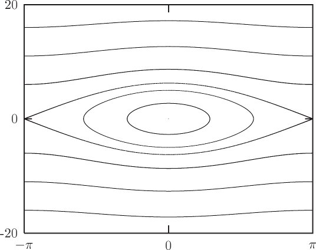
<figcaption id="Fig_4-1"><strong>Figure 4.1</strong> The phase plane of the undriven pendulum has three regions displaying two distinct kinds of behavior. Trajectories lie on the contours of the Hamiltonian. Trajectories may oscillate, making ovoid curves around the equilibrium point, or they may circulate, producing wavy tracks outside the eye-shaped region. The eye-shaped region is delimited by the separatrix. This pendulum has length 1 m and a bob of mass 1 kg, and the acceleration of gravity is 9.8 m s<sup>&#x2212;2</sup>.</figcaption>
</figure>
<section title="Driven pendulum sections with zero-amplitude drive">
<h2 class="level2"><strong>Driven pendulum sections with zero-amplitude drive</strong></h2>

<p class="noindent">Now consider the periodically driven pendulum, but with zero-amplitude drive. The state of the driven pendulum is specified by an angle coordinate, its conjugate momentum, and the phase of the periodic drive. With zero-amplitude drive the evolution of the &#x201C;driven&#x201D; pendulum is the same as the undriven pendulum. The <a id="p288"></a>phase of the drive does not affect the evolution, but we consider the phase of the drive as part of the state so we can give a uniform description that allows us to include the zero-amplitude drive case with the nonzero-amplitude case.</p>
<figure>
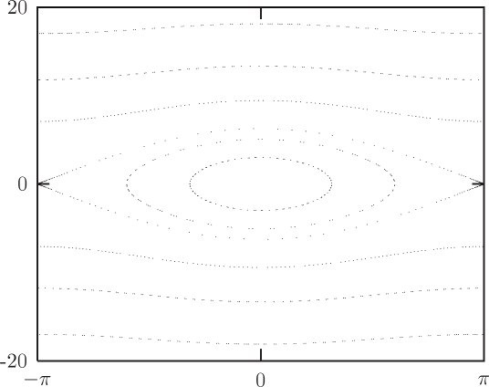
<figcaption id="Fig_4-2"><strong>Figure 4.2</strong> A surface of section for the driven pendulum, with zero-amplitude drive. The effect is to sample the trajectories of the undriven pendulum, which lie on the contours of the Hamiltonian. Only a small number of points are plotted for each trajectory to illustrate the fact that for zero-amplitude drive the surface of section samples the continuous trajectories of the undriven pendulum.</figcaption>
</figure>

<p>For the driven pendulum we make stroboscopic surfaces of section by sampling the state at the drive period and plotting the angular momentum versus the angle (see <a href="chapter004.html#Fig_4-2">figure 4.2</a>). For zero-amplitude drive, the section points are confined to the curves traced by trajectories of the undriven pendulum. For each kind of orbit that we saw for the undriven pendulum, there are orbits of the driven pendulum that generate a corresponding pattern of points on the section.</p>

<p>The two stationary orbits at the equilibrium points of the pendulum appear as points on the surface of section. Equilibrium points are fixed points of the Poincar&#x00E9; map.</p>

<p>Section points for the oscillating orbits of the pendulum fall on the corresponding contour of the Hamiltonian. Section points for <a id="p289"></a>the circulating orbits of the pendulum are likewise confined to the corresponding contour of the Hamiltonian. We notice that the pattern of the points generated by orbits varies from contour to contour. Typically, if we collected more points on the surface of section the points would eventually fill in the contours. However, there are actually two possibilities. Remember that the period of the pendulum is different for different trajectories. If the period of the pendulum is commensurate with the period of the drive, then only a finite number of points will appear on the section. Two periods are commensurate if one is a rational multiple of the other. If the two periods are incommensurate then the section points never repeat. In fact, the points fill the contour densely, coming arbitrarily close to every point on the contour.</p>

<p>Section points for the asymptotic trajectories of the pendulum fall on the contour of the Hamiltonian containing the saddle point. Each asymptotic orbit generates a sequence of isolated points that accumulate near the fixed point. No individual orbit fills the sep-aratrix on the section.</p>
</section>
<section title="Driven pendulum sections for small drive">
<h2 class="level2"><strong>Driven pendulum sections for small drive</strong></h2>

<p class="noindent">Now consider the surface of section for small-amplitude drive (see <a href="chapter004.html#Fig_4-3">figure 4.3</a>). The amplitude of the drive is <em>A</em> &#x003D; 0.001 m; the drive frequency is 4.2 <em>&#x03C9;</em><sub>0</sub>, where <epub:switch id="mathmlSwitch990"><epub:case required-namespace="http://www.w3.org/1998/Math/MathML"><math xmlns="http://www.w3.org/1998/Math/MathML"><mrow><msub><mi>&#x03C9;</mi><mn>0</mn></msub><mo>=</mo><msqrt><mrow><mi>g</mi><mo>/</mo><mi>l</mi></mrow></msqrt></mrow></math></epub:case></epub:switch>. The overall appearance of the surface of section is similar to the section with zero-amplitude drive. Many orbits appear to lie on invariant curves similar to the invariant curves of the zero-drive case. However, there are several new features.</p>

<p>There are now resonance regions that correspond to the pendulum rotating in lock with the drive. These features are found in the upper and lower circulating region of the surface of section. Each island has a fixed point for which the pendulum rotates exactly once per cycle of the drive. In general, fixed points on the surface of section correspond to periodic motions of the system in the full phase space. The fixed point is at &#x00B1;<em>&#x03C0;</em>, indicating that the pendulum is vertical at the section phase of the drive. For orbits in the resonance region away from the fixed point the points on the section apparently generate curves that surround the fixed point.<sup><a class="footnote_link" href="#endnote_1" id="endnote_ref_1">1</a></sup> For these orbits the pendulum rotates on average once per <a id="p290"></a>drive, but the phase of the pendulum is sometimes ahead of the drive and sometimes behind it.</p>

<p>There are other islands that appear with nonzero-amplitude drive. In the central oscillation region there is a sixfold chain of secondary islands. For this orbit the pendulum is oscillating, and the period of the oscillation is commensurate with the drive. The six islands are all generated by a single orbit. In fact, the islands are visited successively in a clockwise direction. After six cycles of the drive the section point returns to the same island but falls at a different point on the island curve, accumulating the island curve after many iterations. The motion of the pendulum is not periodic, but is locked in a resonance so that on average it oscillates once for every six cycles of the drive.</p>

<p>Another feature that appears is a narrow chaotic region near where the separatrix was in the zero-amplitude drive pendulum. We find that chaotic behavior typically makes its most prominent appearance near separatrices. This is not surprising because the difference in velocities that distinguish whether the pendulum rotates or oscillates is small for orbits near the separatrix. As the pendulum approaches the top, whether it receives the extra nudge it needs to go over the top depends on the phase of the drive.</p>

<p>Actually, the apparent separatrices of the resonance islands for which the pendulum period is equal to the drive period are each generated by a chaotic orbit. To see that this orbit appears to occupy an area one would have to magnify the picture by about a factor of 10<sup>4</sup>.</p>

<p>As the drive amplitude is increased the main qualitative changes are the appearance of resonance islands and chaotic zones. Some qualitative characteristics of the zero-amplitude case remain. For instance, many orbits appear to lie on invariant curves. This behavior is not peculiar to the driven pendulum; similar features quite generally arise as additional effects are added to problems that are reducible to quadratures. This chapter is devoted to understanding in greater detail how these generic features arise.</p>
</section>
</section>
<section title="Linear Stability">
<h1 class="level1" id="h1-24"><a href="toc.html#Rh1-24"><strong>4.2&#160;&#160;&#160;Linear Stability</strong></a></h1>

<p class="noindent">Qualitative changes are associated with fixed points of the surface of section. As the drive is turned on, chaotic zones appear at fixed points on separatrices of the undriven system, and we observe the <a id="p291"></a>appearance of new fixed points and periodic points associated with resonance islands. Here we investigate the behavior of systems near fixed points. We can distinguish two types of fixed points on a surface of section: there are fixed points that correspond to equilibria of the system and there are fixed points that correspond to periodic orbits of the system. We first consider the stability of equilibria of systems governed by differential equations, then discuss the stability of fixed points of maps.</p>
<figure>
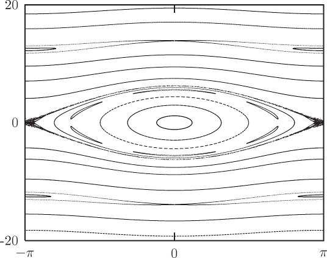
<figcaption id="Fig_4-3"><strong>Figure 4.3</strong> A surface of section for the driven pendulum, with nonzero drive amplitude <em>A</em> &#x003D; 0.001 m and drive frequency 4.2 <em>&#x03C9;</em><sub>0</sub>. Many trajectories apparently generate invariant curves, as in the zero-amplitude drive case. Here, in addition, some orbits belong to island chains and others are chaotic. The most apparent chaotic orbit is near the separatrix of the undriven pendulum.</figcaption>
</figure>
<section>
<section title="Equilibria of Differential Equations">
<h3 class="level3" id="h3_4-2-1"><a href="toc.html#Rh3_4-2-1"><strong>4.2.1 Equilibria of Differential Equations</strong></a></h3>

<p class="noindent">Consider first the case of an equilibrium of a system of differential equations. If a system is initially at an equilibrium point, the system remains there. What can we say about the evolution of the system for points near such an equilibrium point? This is actually a very difficult question, which has not been completely answered. We can, however, understand quite a lot about the motion <a id="p292"></a>of systems near equilibrium. The first step is to investigate the evolution of a linear approximation to the differential equations near the equilibrium. This part is easy, and is the subject of linear stability analysis. Later, we will address what the linear analysis implies for the actual problem.</p>

<p>Consider a system of ordinary differential equations</p>

<p class="eqtext" id="disp_4.1"><epub:switch id="mathmlSwitch991"><epub:case required-namespace="http://www.w3.org/1998/Math/MathML"><math display='block' xmlns="http://www.w3.org/1998/Math/MathML"><mrow><mtable><mtr><mtd><mrow><mi>D</mi><mi>z</mi><mo stretchy='false'>(</mo><mi>t</mi><mo stretchy='false'>)</mo><mo>=</mo><mi>F</mi><mo stretchy='false'>(</mo><mi>t</mi><mo>,</mo><mi>z</mi><mo stretchy='false'>(</mo><mi>t</mi><mo stretchy='false'>)</mo><mo stretchy='false'>)</mo></mrow></mtd><mtd><mrow><mo stretchy='false'>(</mo><mn>4.1</mn><mo stretchy='false'>)</mo></mrow></mtd></mtr></mtable></mrow></math></epub:case></epub:switch></p>


<p class="noindent">with components</p>

<p class="eqtext" id="disp_4.2"><epub:switch id="mathmlSwitch992"><epub:case required-namespace="http://www.w3.org/1998/Math/MathML"><math display='block' xmlns="http://www.w3.org/1998/Math/MathML"><mrow><mtable><mtr><mtd><mrow><mi>D</mi><msup><mi>z</mi><mi>i</mi></msup><mo stretchy='false'>(</mo><mi>t</mi><mo stretchy='false'>)</mo><mo>=</mo><msup><mi>F</mi><mi>i</mi></msup><mo stretchy='false'>(</mo><mi>t</mi><mo>,</mo><msup><mi>z</mi><mn>0</mn></msup><mo stretchy='false'>(</mo><mi>t</mi><mo stretchy='false'>)</mo><mo>,</mo><mo>&#x2026;</mo><mo>,</mo><msup><mi>z</mi><mrow><mi>n</mi><mo>&#x2212;</mo><mn>1</mn></mrow></msup><mo stretchy='false'>(</mo><mi>t</mi><mo stretchy='false'>)</mo><mo stretchy='false'>)</mo><mo>,</mo></mrow></mtd><mtd><mrow><mo stretchy='false'>(</mo><mn>4.2</mn><mo stretchy='false'>)</mo></mrow></mtd></mtr></mtable></mrow></math></epub:case></epub:switch></p>


<p class="noindent">where <em>n</em> is the dimension. An equilibrium point of this system of equations is a point <em>z<sub>e</sub></em> for which the state derivative is zero:</p>

<p class="eqtext" id="disp_4.3"><epub:switch id="mathmlSwitch993"><epub:case required-namespace="http://www.w3.org/1998/Math/MathML"><math display='block' xmlns="http://www.w3.org/1998/Math/MathML"><mrow><mtable><mtr><mtd><mrow><mn>0</mn><mo>=</mo><mi>F</mi><mo stretchy='false'>(</mo><mi>t</mi><mo>,</mo><msub><mi>z</mi><mi>e</mi></msub><mo stretchy='false'>)</mo><mo>.</mo></mrow></mtd><mtd><mrow><mo stretchy='false'>(</mo><mn>4.3</mn><mo stretchy='false'>)</mo></mrow></mtd></mtr></mtable></mrow></math></epub:case></epub:switch></p>


<p class="noindent">That this is zero at all moments for the equilibrium solution implies &#x2202;<sub>0</sub><em>F</em> (<em>t</em>, <em>z<sub>e</sub></em>) &#x003D; 0.</p>

<p>Next consider a path <em>z</em>&#x2032; that passes near the equilibrium point. The path displacement <em>&#x03B6;</em> is defined so that at time <em>t</em></p>

<p class="eqtext" id="disp_4.4"><epub:switch id="mathmlSwitch994"><epub:case required-namespace="http://www.w3.org/1998/Math/MathML"><math display='block' xmlns="http://www.w3.org/1998/Math/MathML"><mrow><mtable><mtr><mtd><mrow><mi>z</mi><mo>&#x2032;</mo><mo stretchy='false'>(</mo><mi>t</mi><mo stretchy='false'>)</mo><mo>=</mo><msub><mi>z</mi><mi>e</mi></msub><mo>+</mo><mi>&#x03B6;</mi><mo stretchy='false'>(</mo><mi>t</mi><mo stretchy='false'>)</mo><mo>.</mo></mrow></mtd><mtd><mrow><mo stretchy='false'>(</mo><mn>4.4</mn><mo stretchy='false'>)</mo></mrow></mtd></mtr></mtable></mrow></math></epub:case></epub:switch></p>


<p class="noindent">We have</p>

<p class="eqtext" id="disp_4.5"><epub:switch id="mathmlSwitch995"><epub:case required-namespace="http://www.w3.org/1998/Math/MathML"><math display='block' xmlns="http://www.w3.org/1998/Math/MathML"><mrow><mtable><mtr><mtd><mrow><mi>D</mi><mi>&#x03B6;</mi><mo stretchy='false'>(</mo><mi>t</mi><mo stretchy='false'>)</mo><mo>=</mo><mi>D</mi><mi>z</mi><mo>&#x2032;</mo><mo stretchy='false'>(</mo><mi>t</mi><mo stretchy='false'>)</mo><mo>=</mo><mi>F</mi><mo stretchy='false'>(</mo><mi>t</mi><mo>,</mo><msub><mi>z</mi><mi>e</mi></msub><mo>+</mo><mi>&#x03B6;</mi><mo stretchy='false'>(</mo><mi>t</mi><mo stretchy='false'>)</mo><mo stretchy='false'>)</mo><mo>.</mo></mrow></mtd><mtd><mrow><mo stretchy='false'>(</mo><mn>4.5</mn><mo stretchy='false'>)</mo></mrow></mtd></mtr></mtable></mrow></math></epub:case></epub:switch></p>


<p class="noindent">If <em>&#x03B6;</em> is small we can write the right-hand side as a Taylor series in <em>&#x03B6;</em>:</p>

<p class="eqtext" id="disp_4.6"><epub:switch id="mathmlSwitch996"><epub:case required-namespace="http://www.w3.org/1998/Math/MathML"><math display='block' xmlns="http://www.w3.org/1998/Math/MathML"><mrow><mtable><mtr><mtd><mrow><mi>D</mi><mi>&#x03B6;</mi><mo stretchy='false'>(</mo><mi>t</mi><mo stretchy='false'>)</mo><mo>=</mo><mi>F</mi><mo stretchy='false'>(</mo><mi>t</mi><mo>,</mo><msub><mi>z</mi><mi>e</mi></msub><mo stretchy='false'>)</mo><mo>+</mo><msub><mo>&#x2202;</mo><mn>1</mn></msub><mi>F</mi><mo stretchy='false'>(</mo><mi>t</mi><mo>,</mo><msub><mi>z</mi><mi>e</mi></msub><mo stretchy='false'>)</mo><mi>&#x03B6;</mi><mo stretchy='false'>(</mo><mi>t</mi><mo stretchy='false'>)</mo><mo>+</mo><mo>&#x22EF;</mo><mo>,</mo></mrow></mtd><mtd><mrow><mo stretchy='false'>(</mo><mn>4.6</mn><mo stretchy='false'>)</mo></mrow></mtd></mtr></mtable></mrow></math></epub:case></epub:switch></p>


<p class="noindent">but the first term is zero because <em>z<sub>e</sub></em> is an equilibrium point, so</p>

<p class="eqtext" id="disp_4.7"><epub:switch id="mathmlSwitch997"><epub:case required-namespace="http://www.w3.org/1998/Math/MathML"><math display='block' xmlns="http://www.w3.org/1998/Math/MathML"><mrow><mtable><mtr><mtd><mrow><mi>D</mi><mi>&#x03B6;</mi><mo stretchy='false'>(</mo><mi>t</mi><mo stretchy='false'>)</mo><mo>=</mo><msub><mo>&#x2202;</mo><mn>1</mn></msub><mi>F</mi><mo stretchy='false'>(</mo><mi>t</mi><mo>,</mo><msub><mi>z</mi><mi>e</mi></msub><mo stretchy='false'>)</mo><mi>&#x03B6;</mi><mo stretchy='false'>(</mo><mi>t</mi><mo stretchy='false'>)</mo><mo>+</mo><mo>&#x22EF;</mo><mo>.</mo></mrow></mtd><mtd><mrow><mo stretchy='false'>(</mo><mn>4.7</mn><mo stretchy='false'>)</mo></mrow></mtd></mtr></mtable></mrow></math></epub:case></epub:switch></p>


<p class="noindent">If <em>&#x03B6;</em> is small the evolution is approximated by the linear terms. Linear stability analysis investigates the evolution of the approximate equation</p>

<p class="eqtext" id="disp_4.8"><epub:switch id="mathmlSwitch998"><epub:case required-namespace="http://www.w3.org/1998/Math/MathML"><math display='block' xmlns="http://www.w3.org/1998/Math/MathML"><mrow><mtable><mtr><mtd><mrow><mi>D</mi><mi>&#x03B6;</mi><mo stretchy='false'>(</mo><mi>t</mi><mo stretchy='false'>)</mo><mo>=</mo><msub><mo>&#x2202;</mo><mn>1</mn></msub><mi>F</mi><mo stretchy='false'>(</mo><mi>t</mi><mo>,</mo><msub><mi>z</mi><mi>e</mi></msub><mo stretchy='false'>)</mo><mi>&#x03B6;</mi><mo stretchy='false'>(</mo><mi>t</mi><mo stretchy='false'>)</mo><mo>.</mo></mrow></mtd><mtd><mrow><mo stretchy='false'>(</mo><mn>4.8</mn><mo stretchy='false'>)</mo></mrow></mtd></mtr></mtable></mrow></math></epub:case></epub:switch></p>

<a id="p293"></a>

<p class="noindent">These are the variational equations (<a href="chapter003.html#disp_3.145">3.145</a>) with the equilibrium solution substituted for the reference trajectory. The relationship of the solutions of this linearized system to the full system is a difficult mathematical problem, which has not been fully resolved.</p>

<p>If we restrict attention to autonomous systems (&#x2202;<sub>0</sub><em>F</em> &#x003D; 0), then the variational equations at an equilibrium are a linear system of ordinary differential equations with constant coefficients.<sup><a class="footnote_link" href="#endnote_2" id="endnote_ref_2">2</a></sup> Such systems can be solved analytically. To simplify the notation, let <em>M</em> &#x003D; &#x2202;<sub>1</sub><em>F</em>(<em>t</em>, <em>z<sub>e</sub></em>), so</p>

<p class="eqtext" id="disp_4.9"><epub:switch id="mathmlSwitch999"><epub:case required-namespace="http://www.w3.org/1998/Math/MathML"><math display='block' xmlns="http://www.w3.org/1998/Math/MathML"><mrow><mtable><mtr><mtd><mrow><mi>D</mi><mi>&#x03B6;</mi><mo stretchy='false'>(</mo><mi>t</mi><mo stretchy='false'>)</mo><mo>=</mo><mi>M</mi><mi>&#x03B6;</mi><mo stretchy='false'>(</mo><mi>t</mi><mo stretchy='false'>)</mo><mo>.</mo></mrow></mtd><mtd><mrow><mo stretchy='false'>(</mo><mn>4.9</mn><mo stretchy='false'>)</mo></mrow></mtd></mtr></mtable></mrow></math></epub:case></epub:switch></p>


<p class="noindent">We seek a solution of the form</p>

<p class="eqtext" id="disp_4.10"><epub:switch id="mathmlSwitch1000"><epub:case required-namespace="http://www.w3.org/1998/Math/MathML"><math display='block' xmlns="http://www.w3.org/1998/Math/MathML"><mrow><mtable><mtr><mtd><mrow><mi>&#x03B6;</mi><mo stretchy='false'>(</mo><mi>t</mi><mo stretchy='false'>)</mo><mo>=</mo><mi>&#x03B1;</mi><msup><mi>e</mi><mrow><mi>&#x03BB;</mi><mi>t</mi></mrow></msup><mo>,</mo></mrow></mtd><mtd><mrow><mo stretchy='false'>(</mo><mn>4.10</mn><mo stretchy='false'>)</mo></mrow></mtd></mtr></mtable></mrow></math></epub:case></epub:switch></p>


<p class="noindent">where <em>&#x03B1;</em> is a structured constant with the same number of components as <em>&#x03B6;</em>, and <em>&#x03BB;</em> is a complex number called a <em>characteristic exponent</em>. Substituting, we find</p>

<p class="eqtext" id="disp_4.11"><epub:switch id="mathmlSwitch1001"><epub:case required-namespace="http://www.w3.org/1998/Math/MathML"><math display='block' xmlns="http://www.w3.org/1998/Math/MathML"><mrow><mtable><mtr><mtd><mrow><mi>&#x03BB;</mi><mi>&#x03B1;</mi><msup><mi>e</mi><mrow><mi>&#x03BB;</mi><mi>t</mi></mrow></msup><mo>=</mo><mi>M</mi><mi>&#x03B1;</mi><msup><mi>e</mi><mrow><mi>&#x03BB;</mi><mi>t</mi></mrow></msup><mo>.</mo></mrow></mtd><mtd><mrow><mo stretchy='false'>(</mo><mn>4.11</mn><mo stretchy='false'>)</mo></mrow></mtd></mtr></mtable></mrow></math></epub:case></epub:switch></p>


<p class="noindent">The exponential factor is not zero, so we find</p>

<p class="eqtext" id="disp_4.12"><epub:switch id="mathmlSwitch1002"><epub:case required-namespace="http://www.w3.org/1998/Math/MathML"><math display='block' xmlns="http://www.w3.org/1998/Math/MathML"><mrow><mtable><mtr><mtd><mrow><mi>M</mi><mi>&#x03B1;</mi><mo>=</mo><mi>&#x03BB;</mi><mi>&#x03B1;</mi><mo>,</mo></mrow></mtd><mtd><mrow><mo stretchy='false'>(</mo><mn>4.12</mn><mo stretchy='false'>)</mo></mrow></mtd></mtr></mtable></mrow></math></epub:case></epub:switch></p>


<p class="noindent">which is an equation for the eigenvalue <em>&#x03BB;</em> and (normalized) eigen-vector <em>&#x03B1;</em>. In general, there are <em>n</em> eigenvalues and <em>n</em> eigenvectors, so we must add a subscript to both <em>&#x03B1;</em> and <em>&#x03BB;</em> indicating the particular solution. The general solution is an arbitrary linear combination of these individual solutions. The eigenvalues are solutions of the characteristic equation</p>

<p class="eqtext" id="disp_4.13"><epub:switch id="mathmlSwitch1003"><epub:case required-namespace="http://www.w3.org/1998/Math/MathML"><math display='block' xmlns="http://www.w3.org/1998/Math/MathML"><mrow><mtable><mtr><mtd><mrow><mn>0</mn><mo>=</mo><mi>det</mi><mo>&#x2061;</mo><mo stretchy='false'>(</mo><mi mathvariant="bold">M</mi><mo>&#x2212;</mo><mi>&#x03BB;</mi><mstyle mathvariant='bold'><mi>I</mi></mstyle><mo stretchy='false'>)</mo></mrow></mtd><mtd><mrow><mo stretchy='false'>(</mo><mn>4.13</mn><mo stretchy='false'>)</mo></mrow></mtd></mtr></mtable></mrow></math></epub:case></epub:switch></p>


<p class="noindent">where <strong>M</strong> is the matrix representation of <em>M</em>, and <strong>I</strong> is the identity matrix of the same dimension. The elements of <strong>M</strong> are real, so we know that the eigenvalues <em>&#x03BB;</em> either are real or come in complex-conjugate pairs. We assume the eigenvalues are all distinct.<sup><a class="footnote_link" href="#endnote_3" id="endnote_ref_3">3</a></sup></p>
<a id="p294"></a>

<p>If the eigenvalue is real then the solution is exponential, as assumed. If the eigenvalue <em>&#x03BB;</em> &#x003E; 0 then the solution expands exponentially along the direction <em>&#x03B1;</em>; if <em>&#x03BB;</em> &#x003C; 0 then the solution contracts exponentially along the direction <em>&#x03B1;</em>.</p>

<p>If the eigenvalue is complex we can form real solutions by combining the two solutions for the complex-conjugate pair of eigenvalues. Let <em>&#x03BB;</em> &#x003D; <em>a</em> &#x002B; <em>ib</em>, with real <em>a</em> and <em>b</em>, be one such complex eigenvalue. Let <em>&#x03B1;</em> &#x003D; <em>u</em> &#x002B; <em>iv</em>, where <em>u</em> and <em>v</em> are real, be the eigen-vector corresponding to it. So there is a complex solution of the form</p>

<p class="eqtext" id="disp_4.14"><epub:switch id="mathmlSwitch1004"><epub:case required-namespace="http://www.w3.org/1998/Math/MathML"><math display='block' xmlns="http://www.w3.org/1998/Math/MathML"><mrow><mtable columnalign='left'><mtr columnalign='left'><mtd columnalign='left'><mrow><msub><mi>&#x03B6;</mi><mi>c</mi></msub><mo stretchy='false'>(</mo><mi>t</mi><mo stretchy='false'>)</mo></mrow></mtd><mtd columnalign='left'><mrow><mo>=</mo><mo stretchy='false'>(</mo><mi>u</mi><mo>+</mo><mi>i</mi><mi>v</mi><mo stretchy='false'>)</mo><msup><mi>e</mi><mrow><mo stretchy='false'>(</mo><mi>a</mi><mo>+</mo><mi>i</mi><mi>b</mi><mo stretchy='false'>)</mo><mi>t</mi></mrow></msup></mrow></mtd><mtd columnalign='left'><mrow></mrow></mtd></mtr><mtr columnalign='left'><mtd columnalign='left'><mrow></mrow></mtd><mtd columnalign='left'><mrow><mo>=</mo><mo stretchy='false'>(</mo><mi>u</mi><mo>+</mo><mi>i</mi><mi>v</mi><mo stretchy='false'>)</mo><msup><mi>e</mi><mrow><mi>a</mi><mi>t</mi></mrow></msup><mo stretchy='false'>(</mo><mi>cos</mi><mo>&#x2061;</mo><mtext>&#x2009;</mtext><mi>b</mi><mi>t</mi><mo>+</mo><mi>i</mi><mtext>&#x2009;</mtext><mi>sin</mi><mo>&#x2061;</mo><mtext>&#x2009;</mtext><mi>b</mi><mi>t</mi><mo stretchy='false'>)</mo></mrow></mtd><mtd columnalign='left'><mrow></mrow></mtd></mtr><mtr columnalign='left'><mtd columnalign='left'><mrow></mrow></mtd><mtd columnalign='left'><mrow><mo>=</mo><msup><mi>e</mi><mrow><mi>a</mi><mi>t</mi></mrow></msup><mo stretchy='false'>(</mo><mi>u</mi><mtext>&#x2009;</mtext><mi>cos</mi><mo>&#x2061;</mo><mtext>&#x2009;</mtext><mi>b</mi><mi>t</mi><mo>&#x2212;</mo><mi>v</mi><mtext>&#x2009;</mtext><mi>sin</mi><mo>&#x2061;</mo><mtext>&#x2009;</mtext><mi>b</mi><mi>t</mi><mo stretchy='false'>)</mo><mo>+</mo><mi>i</mi><msup><mi>e</mi><mrow><mi>a</mi><mi>t</mi></mrow></msup><mo stretchy='false'>(</mo><mi>u</mi><mtext>&#x2009;</mtext><mi>sin</mi><mo>&#x2061;</mo><mtext>&#x2009;</mtext><mi>b</mi><mi>t</mi><mo>+</mo><mi>v</mi><mtext>&#x2009;</mtext><mi>cos</mi><mo>&#x2061;</mo><mtext>&#x2009;</mtext><mi>b</mi><mi>t</mi><mo stretchy='false'>)</mo><mo>.</mo></mrow></mtd><mtd columnalign='left'><mrow><mo stretchy='false'>(</mo><mn>4.14</mn><mo stretchy='false'>)</mo></mrow></mtd></mtr></mtable></mrow></math></epub:case></epub:switch></p>


<p class="noindent">The complex conjugate of this solution is also a solution, because the ordinary differential equation is linear with real linear coefficients. This complex-conjugate solution is associated with the eigenvalue that is the complex conjugate of the original complex eigenvalue. So the real and imaginary parts of <em>&#x03B6;<sub>c</sub></em> are real solutions:</p>

<p class="eqtext" id="disp_4.15"><epub:switch id="mathmlSwitch1005"><epub:case required-namespace="http://www.w3.org/1998/Math/MathML"><math display='block' xmlns="http://www.w3.org/1998/Math/MathML"><mrow><mtable columnalign='left'><mtr columnalign='left'><mtd columnalign='left'><mrow><msub><mi>&#x03B6;</mi><mi>a</mi></msub><mo stretchy='false'>(</mo><mi>t</mi><mo stretchy='false'>)</mo></mrow></mtd><mtd columnalign='left'><mrow><mo>=</mo><msup><mi>e</mi><mrow><mi>a</mi><mi>t</mi></mrow></msup><mo stretchy='false'>(</mo><mi>u</mi><mtext>&#x2009;</mtext><mi>cos</mi><mo>&#x2061;</mo><mtext>&#x2009;</mtext><mi>b</mi><mi>t</mi><mo>&#x2212;</mo><mi>v</mi><mtext>&#x2009;</mtext><mi>sin</mi><mo>&#x2061;</mo><mtext>&#x2009;</mtext><mi>b</mi><mi>t</mi><mo stretchy='false'>)</mo></mrow></mtd><mtd columnalign='left'><mrow></mrow></mtd></mtr><mtr columnalign='left'><mtd columnalign='left'><mrow><msub><mi>&#x03B6;</mi><mi>b</mi></msub><mo stretchy='false'>(</mo><mi>t</mi><mo stretchy='false'>)</mo></mrow></mtd><mtd columnalign='left'><mrow><mo>=</mo><msup><mi>e</mi><mrow><mi>a</mi><mi>t</mi></mrow></msup><mo stretchy='false'>(</mo><mi>u</mi><mtext>&#x2009;</mtext><mi>sin</mi><mo>&#x2061;</mo><mtext>&#x2009;</mtext><mi>b</mi><mi>t</mi><mo>+</mo><mi>v</mi><mtext>&#x2009;</mtext><mi>cos</mi><mo>&#x2061;</mo><mtext>&#x2009;</mtext><mi>b</mi><mi>t</mi><mo stretchy='false'>)</mo><mo>.</mo></mrow></mtd><mtd columnalign='left'><mrow><mo stretchy='false'>(</mo><mn>4.15</mn><mo stretchy='false'>)</mo></mrow></mtd></mtr></mtable></mrow></math></epub:case></epub:switch></p>


<p class="noindent">These two solutions reside in the plane containing the vectors <em>u</em> and <em>v</em>. If <em>a</em> is positive both solutions spiral outwards exponentially, and if <em>a</em> is negative they both spiral inwards. If <em>a</em> is zero, both solutions trace the same ellipse, but with different phases.</p>

<p>Again, the general solution is an arbitrary linear combination of the particular real solutions corresponding to the various eigenvalues. So if we denote the <em>k</em>th real eigensolution <em>&#x03B6;<sub>k</sub></em>(<em>t</em>), then the general solution is</p>

<p class="eqtext" id="disp_4.16"><epub:switch id="mathmlSwitch1006"><epub:case required-namespace="http://www.w3.org/1998/Math/MathML"><math display='block' xmlns="http://www.w3.org/1998/Math/MathML"><mrow><mtable columnalign='left'><mtr columnalign='left'><mtd columnalign='left'><mrow><mi>&#x03B6;</mi><mo stretchy='false'>(</mo><mi>t</mi><mo stretchy='false'>)</mo><mo>=</mo><mstyle displaystyle='true'><munder><mo>&#x2211;</mo><mi>k</mi></munder><mrow><msub><mi>A</mi><mi>k</mi></msub><msub><mi>&#x03B6;</mi><mi>k</mi></msub><mo stretchy='false'>(</mo><mi>t</mi><mo stretchy='false'>)</mo><mo>,</mo></mrow></mstyle></mrow></mtd><mtd columnalign='left'><mrow><mo stretchy='false'>(</mo><mn>4.16</mn><mo stretchy='false'>)</mo></mrow></mtd></mtr></mtable></mrow></math></epub:case></epub:switch></p>


<p class="noindent">where <em>A<sub>k</sub></em> may be determined by the initial conditions (the state at a given time).</p>

<p class="noindent1-top-exe" id="Exe_4-1"><strong>Exercise  4.1: Pendulum</strong></p>

<p class="noindent">Carry out the details of finding the eigensolutions for the two equilibria of the pendulum (<em>&#x03B8;</em> &#x003D; 0 and <em>&#x03B8;</em> &#x003D; <em>&#x03C0;</em>, both with <em>p<sub>&#x03B8;</sub></em> &#x003D; 0). How is the <a id="p295"></a>small-amplitude oscillation frequency related to the eigenvalues? How are the eigendirections related to the contours of the Hamiltonian?</p>
</section>
<section title="Fixed Points of Maps">
<h3 class="level3" id="h3_4-2-2"><a href="toc.html#Rh3_4-2-2"><strong>4.2.2 Fixed Points of Maps</strong></a></h3>

<p class="noindent">Fixed points on a surface of section correspond either to equilibrium points of the system or to a periodic motion of the system. Linear stability analysis of fixed points of maps is similar to the linear stability analysis for equilibrium points of systems governed by differential equations.</p>

<p>Let <em>T</em> be a map of the state space onto itself, as might be generated by a surface of section. A trajectory sequence is generated by successive iteration of the map <em>T</em>. Let <em>x</em>(<em>n</em>) be the <em>n</em>th point of the sequence. The map carries one point of the trajectory sequence to the next: <em>x</em>(<em>n</em> &#x002B; 1) &#x003D; <em>T</em>(<em>x</em>(<em>n</em>)). We can represent successive iterations of the map by a superscript, so that <em>T <sup>i</sup></em> indicates <em>T</em> composed <em>i</em> times. For example, <em>T</em><sup>2</sup>(<em>x</em>) &#x003D; <em>T</em> (<em>T</em>(<em>x</em>)). Thus <em>x</em>(<em>n</em>) &#x003D; <em>T<sup>n</sup></em>(<em>x</em>(0)).<sup><a class="footnote_link" href="#endnote_4" id="endnote_ref_4">4</a></sup></p>

<p>A <em>fixed point x</em><sub>0</sub> of the map <em>T</em> satisfies</p>

<p class="eqtext" id="disp_4.17"><epub:switch id="mathmlSwitch1007"><epub:case required-namespace="http://www.w3.org/1998/Math/MathML"><math display='block' xmlns="http://www.w3.org/1998/Math/MathML"><mrow><mtable columnalign='left'><mtr columnalign='left'><mtd columnalign='left'><mrow><msub><mi>x</mi><mn>0</mn></msub><mo>=</mo><mi>T</mi><mo stretchy='false'>(</mo><msub><mi>x</mi><mn>0</mn></msub><mo stretchy='false'>)</mo><mo>.</mo></mrow></mtd><mtd columnalign='left'><mrow><mo stretchy='false'>(</mo><mn>4.17</mn><mo stretchy='false'>)</mo></mrow></mtd></mtr></mtable></mrow></math></epub:case></epub:switch></p>


<p class="noindent">A <em>periodic point</em> of the map <em>T</em> is a point that is visited every <em>k</em> iterations of <em>T</em>. Thus it is a fixed point of the map <em>T<sup>k</sup></em>. So the behavior near a periodic point can be ascertained by looking at the behavior near an associated fixed point of <em>T<sup>k</sup></em>.</p>

<p>Let <em>x</em> be some trajectory initially near the fixed point <em>x</em><sub>0</sub> of <em>T</em>, and <em>&#x03BE;</em> be the deviation from <em>x</em><sub>0</sub>: <em>x</em>(<em>n</em>) &#x003D; <em>x</em><sub>0</sub> &#x002B; <em>&#x03BE;</em>(<em>n</em>). The trajectory satisfies</p>

<p class="eqtext" id="disp_4.18"><epub:switch id="mathmlSwitch1008"><epub:case required-namespace="http://www.w3.org/1998/Math/MathML"><math display='block' xmlns="http://www.w3.org/1998/Math/MathML"><mrow><mtable columnalign='left'><mtr columnalign='left'><mtd columnalign='left'><mrow><msub><mi>x</mi><mn>0</mn></msub><mo>+</mo><mi>&#x03BE;</mi><mo stretchy='false'>(</mo><mi>n</mi><mo>+</mo><mn>1</mn><mo stretchy='false'>)</mo><mo>=</mo><mi>T</mi><mo stretchy='false'>(</mo><msub><mi>x</mi><mn>0</mn></msub><mo>+</mo><mi>&#x03BE;</mi><mo stretchy='false'>(</mo><mi>n</mi><mo stretchy='false'>)</mo><mo stretchy='false'>)</mo><mo>.</mo></mrow></mtd><mtd columnalign='left'><mrow><mo stretchy='false'>(</mo><mn>4.18</mn><mo stretchy='false'>)</mo></mrow></mtd></mtr></mtable></mrow></math></epub:case></epub:switch></p>


<p class="noindent">Expanding the right-hand side as a Taylor series, we obtain</p>

<p class="eqtext" id="disp_4.19"><epub:switch id="mathmlSwitch1009"><epub:case required-namespace="http://www.w3.org/1998/Math/MathML"><math display='block' xmlns="http://www.w3.org/1998/Math/MathML"><mrow><mtable columnalign='left'><mtr columnalign='left'><mtd columnalign='left'><mrow><msub><mi>x</mi><mn>0</mn></msub><mo>+</mo><mi>&#x03BE;</mi><mo stretchy='false'>(</mo><mi>n</mi><mo>+</mo><mn>1</mn><mo stretchy='false'>)</mo><mo>=</mo><mi>T</mi><mo stretchy='false'>(</mo><msub><mi>x</mi><mn>0</mn></msub><mo stretchy='false'>)</mo><mo>+</mo><mi>D</mi><mi>T</mi><mo stretchy='false'>(</mo><msub><mi>x</mi><mn>0</mn></msub><mo stretchy='false'>)</mo><mi>&#x03BE;</mi><mo stretchy='false'>(</mo><mi>n</mi><mo stretchy='false'>)</mo><mo>+</mo><mo>&#x22EF;</mo><mo>,</mo></mrow></mtd><mtd columnalign='left'><mrow><mo stretchy='false'>(</mo><mn>4.19</mn><mo stretchy='false'>)</mo></mrow></mtd></mtr></mtable></mrow></math></epub:case></epub:switch></p>


<p class="noindent">but <em>x</em><sub>0</sub> &#x003D; <em>T</em>(<em>x</em><sub>0</sub>) so</p>

<p class="eqtext" id="disp_4.20"><epub:switch id="mathmlSwitch1010"><epub:case required-namespace="http://www.w3.org/1998/Math/MathML"><math display='block' xmlns="http://www.w3.org/1998/Math/MathML"><mrow><mtable columnalign='left'><mtr columnalign='left'><mtd columnalign='left'><mrow><mi>&#x03BE;</mi><mo stretchy='false'>(</mo><mi>n</mi><mo>+</mo><mn>1</mn><mo stretchy='false'>)</mo><mo>=</mo><mi>D</mi><mi>T</mi><mo stretchy='false'>(</mo><msub><mi>x</mi><mn>0</mn></msub><mo stretchy='false'>)</mo><mi>&#x03BE;</mi><mo stretchy='false'>(</mo><mi>n</mi><mo stretchy='false'>)</mo><mo>+</mo><mo>&#x22EF;</mo><mo>.</mo></mrow></mtd><mtd columnalign='left'><mrow><mo stretchy='false'>(</mo><mn>4.20</mn><mo stretchy='false'>)</mo></mrow></mtd></mtr></mtable></mrow></math></epub:case></epub:switch></p>

<a id="p296"></a>

<p class="noindent">Linear stability analysis considers the evolution of the system truncated to the linear terms</p>

<p class="eqtext" id="disp_4.21"><epub:switch id="mathmlSwitch1011"><epub:case required-namespace="http://www.w3.org/1998/Math/MathML"><math display='block' xmlns="http://www.w3.org/1998/Math/MathML"><mrow><mtable columnalign='left'><mtr columnalign='left'><mtd columnalign='left'><mrow><mi>&#x03BE;</mi><mo stretchy='false'>(</mo><mi>n</mi><mo>+</mo><mn>1</mn><mo stretchy='false'>)</mo><mo>=</mo><mi>D</mi><mi>T</mi><mo stretchy='false'>(</mo><msub><mi>x</mi><mn>0</mn></msub><mo stretchy='false'>)</mo><mi>&#x03BE;</mi><mo stretchy='false'>(</mo><mi>n</mi><mo stretchy='false'>)</mo><mo>.</mo></mrow></mtd><mtd columnalign='left'><mrow><mo stretchy='false'>(</mo><mn>4.21</mn><mo stretchy='false'>)</mo></mrow></mtd></mtr></mtable></mrow></math></epub:case></epub:switch></p>


<p class="noindent">This is a system of linear difference equations, with constant coefficients <em>DT</em>(<em>x</em><sub>0</sub>).</p>

<p>We assume there are solutions of the form</p>

<p class="eqtext" id="disp_4.22"><epub:switch id="mathmlSwitch1012"><epub:case required-namespace="http://www.w3.org/1998/Math/MathML"><math display='block' xmlns="http://www.w3.org/1998/Math/MathML"><mrow><mtable columnalign='left'><mtr columnalign='left'><mtd columnalign='left'><mrow><mi>&#x03BE;</mi><mo stretchy='false'>(</mo><mi>n</mi><mo stretchy='false'>)</mo><mo>=</mo><msup><mi>&#x03C1;</mi><mi>n</mi></msup><mi>&#x03B1;</mi><mo>,</mo></mrow></mtd><mtd columnalign='left'><mrow><mo stretchy='false'>(</mo><mn>4.22</mn><mo stretchy='false'>)</mo></mrow></mtd></mtr></mtable></mrow></math></epub:case></epub:switch></p>


<p class="noindent">where <em>&#x03C1;</em> is some (complex) number, called a <em>characteristic multiplier</em>.<sup><a class="footnote_link" href="#endnote_5" id="endnote_ref_5">5</a></sup> Substituting this solution into the linearized evolution equation, we find</p>

<p class="eqtext" id="disp_4.23"><epub:switch id="mathmlSwitch1013"><epub:case required-namespace="http://www.w3.org/1998/Math/MathML"><math display='block' xmlns="http://www.w3.org/1998/Math/MathML"><mrow><mtable columnalign='left'><mtr columnalign='left'><mtd columnalign='left'><mrow><mi>&#x03C1;</mi><mi>&#x03B1;</mi><mo>=</mo><mi>D</mi><mi>T</mi><mo stretchy='false'>(</mo><msub><mi>x</mi><mn>0</mn></msub><mo stretchy='false'>)</mo><mi>&#x03B1;</mi><mo>,</mo></mrow></mtd><mtd columnalign='left'><mrow><mo stretchy='false'>(</mo><mn>4.23</mn><mo stretchy='false'>)</mo></mrow></mtd></mtr></mtable></mrow></math></epub:case></epub:switch></p>


<p class="noindent">or</p>

<p class="eqtext" id="disp_4.24"><epub:switch id="mathmlSwitch1014"><epub:case required-namespace="http://www.w3.org/1998/Math/MathML"><math display='block' xmlns="http://www.w3.org/1998/Math/MathML"><mrow><mtable columnalign='left'><mtr columnalign='left'><mtd columnalign='left'><mrow><mo stretchy='false'>(</mo><mi>D</mi><mi>T</mi><mo stretchy='false'>(</mo><msub><mi>x</mi><mn>0</mn></msub><mo stretchy='false'>)</mo><mo>&#x2212;</mo><mi>&#x03C1;</mi><mi>I</mi><mo stretchy='false'>)</mo><mi>&#x03B1;</mi><mo>=</mo><mn>0</mn><mo>,</mo></mrow></mtd><mtd columnalign='left'><mrow><mo stretchy='false'>(</mo><mn>4.24</mn><mo stretchy='false'>)</mo></mrow></mtd></mtr></mtable></mrow></math></epub:case></epub:switch></p>


<p class="noindent">where <em>I</em> is the identity multiplier. We see that <em>&#x03C1;</em> is an eigenvalue of the linear transformation <em>DT</em>(<em>x</em><sub>0</sub>) and <em>&#x03B1;</em> is the associated (normalized) eigenvector. Let <em>M</em> &#x003D; <em>DT</em>(<em>x</em><sub>0</sub>), and <strong>M</strong> be its matrix representation. The eigenvalues are determined by</p>

<p class="eqtext" id="disp_4.25"><epub:switch id="mathmlSwitch1015"><epub:case required-namespace="http://www.w3.org/1998/Math/MathML"><math display='block' xmlns="http://www.w3.org/1998/Math/MathML"><mrow><mtable columnalign='left'><mtr columnalign='left'><mtd columnalign='left'><mrow><mi>det</mi><mo>&#x2061;</mo><mo stretchy='false'>(</mo><mstyle mathvariant='bold'><mi>M</mi></mstyle><mo>&#x2212;</mo><mi>&#x03C1;</mi><mstyle mathvariant='bold'><mi>I</mi></mstyle><mo stretchy='false'>)</mo><mo>=</mo><mn>0.</mn></mrow></mtd><mtd columnalign='left'><mrow><mo stretchy='false'>(</mo><mn>4.25</mn><mo stretchy='false'>)</mo></mrow></mtd></mtr></mtable></mrow></math></epub:case></epub:switch></p>


<p class="noindent">The elements of <strong>M</strong> are real, so the eigenvalues <em>&#x03C1;</em> are either real or come in complex-conjugate pairs.<sup><a class="footnote_link" href="#endnote_6" id="endnote_ref_6">6</a></sup></p>

<p>For the real eigenvalues the solutions are just exponential expansion or contraction along the associated eigenvector <em>&#x03B1;</em>:</p>

<p class="eqtext" id="disp_4.26"><epub:switch id="mathmlSwitch1016"><epub:case required-namespace="http://www.w3.org/1998/Math/MathML"><math display='block' xmlns="http://www.w3.org/1998/Math/MathML"><mrow><mtable columnalign='left'><mtr columnalign='left'><mtd columnalign='left'><mrow><mi>&#x03BE;</mi><mo stretchy='false'>(</mo><mi>n</mi><mo stretchy='false'>)</mo><mo>=</mo><msup><mi>&#x03C1;</mi><mi>n</mi></msup><mi>&#x03B1;</mi><mo>.</mo></mrow></mtd><mtd columnalign='left'><mrow><mo stretchy='false'>(</mo><mn>4.26</mn><mo stretchy='false'>)</mo></mrow></mtd></mtr></mtable></mrow></math></epub:case></epub:switch></p>


<p class="noindent">The solution is expanding if &#x007C;<em>&#x03C1;</em>&#x007C; &#x003E; 1 and contracting if &#x007C;<em>&#x03C1;</em>&#x007C; &#x003C; 1.</p>

<p>If the eigenvalues are complex, then the solution is complex, but the complex solutions corresponding to the complex-conjugate pair of eigenvalues can be combined to form two real solutions, as was done for the equilibrium solutions. Let <em>&#x03C1;</em> &#x003D; <em>e</em><sup><em>A</em>&#x002B;<em>iB</em></sup> with real <a id="p297"></a><em>A</em> and <em>B</em>, and <em>&#x03B1;</em> &#x003D; <em>u</em> &#x002B; <em>iv</em>. A calculation similar to that for the equilibrium case shows that there are two real solutions</p>

<p class="eqtext" id="disp_4.27"><epub:switch id="mathmlSwitch1017"><epub:case required-namespace="http://www.w3.org/1998/Math/MathML"><math display='block' xmlns="http://www.w3.org/1998/Math/MathML"><mrow><mtable columnalign='left'><mtr columnalign='left'><mtd columnalign='left'><mrow><msub><mi>&#x03BE;</mi><mi>a</mi></msub><mo stretchy='false'>(</mo><mi>n</mi><mo stretchy='false'>)</mo></mrow></mtd><mtd columnalign='left'><mrow><mo>=</mo><msup><mtext>e</mtext><mrow><mi>A</mi><mi>n</mi></mrow></msup><mtext>&#x2009;</mtext><mo stretchy='false'>(</mo><mi>u</mi><mtext>&#x2009;</mtext><mi>cos</mi><mo>&#x2061;</mo><mtext>&#x2009;</mtext><mi>B</mi><mi>n</mi><mo>&#x2212;</mo><mi>v</mi><mtext>&#x2009;</mtext><mi>sin</mi><mo>&#x2061;</mo><mtext>&#x2009;</mtext><mi>B</mi><mi>n</mi><mo stretchy='false'>)</mo></mrow></mtd><mtd columnalign='left'><mrow></mrow></mtd></mtr><mtr columnalign='left'><mtd columnalign='left'><mrow><msub><mi>&#x03BE;</mi><mi>b</mi></msub><mo stretchy='false'>(</mo><mi>n</mi><mo stretchy='false'>)</mo></mrow></mtd><mtd columnalign='left'><mrow><mo>=</mo><msup><mtext>e</mtext><mrow><mi>A</mi><mi>n</mi></mrow></msup><mtext>&#x2009;</mtext><mo stretchy='false'>(</mo><mi>u</mi><mtext>&#x2009;</mtext><mi>sin</mi><mo>&#x2061;</mo><mtext>&#x2009;</mtext><mi>B</mi><mi>n</mi><mo>+</mo><mi>v</mi><mtext>&#x2009;</mtext><mi>cos</mi><mo>&#x2061;</mo><mtext>&#x2009;</mtext><mi>B</mi><mi>n</mi><mo stretchy='false'>)</mo><mo>.</mo></mrow></mtd><mtd columnalign='left'><mrow><mo stretchy='false'>(</mo><mn>4.27</mn><mo stretchy='false'>)</mo></mrow></mtd></mtr></mtable></mrow></math></epub:case></epub:switch></p>


<p class="noindent">We see that if <em>A</em> &#x003E; 0 then the solution exponentially expands, and if <em>A</em> &#x003C; 0 the solution exponentially contracts. Exponential expansion, <em>A</em> &#x003E; 0, corresponds to &#x007C;<em>&#x03C1;</em>&#x007C; &#x003E; 1; exponential contraction, <em>A</em> &#x003C; 0, corresponds to &#x007C;<em>&#x03C1;</em>&#x007C; &#x003C; 1. If <em>A</em> &#x003D; 0 then the two real solutions trace an ellipse and any linear combination of them traces an ellipse.</p>

<p>The general solution is an arbitrary linear combination of the eigensolutions. Let <em>&#x03BE;<sub>k</sub></em> be the <em>k</em>th real eigensolution. The general solution is</p>

<p class="eqtext" id="disp_4.28"><epub:switch id="mathmlSwitch1018"><epub:case required-namespace="http://www.w3.org/1998/Math/MathML"><math display='block' xmlns="http://www.w3.org/1998/Math/MathML"><mrow><mtable columnalign='left'><mtr columnalign='left'><mtd columnalign='left'><mrow><mi>&#x03BE;</mi><mo stretchy='false'>(</mo><mi>n</mi><mo stretchy='false'>)</mo><mo>=</mo><mstyle displaystyle='true'><munder><mo>&#x2211;</mo><mi>k</mi></munder><mrow><msub><mi>A</mi><mi>k</mi></msub><msub><mi>&#x03BE;</mi><mi>k</mi></msub><mo stretchy='false'>(</mo><mi>n</mi><mo stretchy='false'>)</mo><mo>,</mo></mrow></mstyle></mrow></mtd><mtd columnalign='left'><mrow><mo stretchy='false'>(</mo><mn>4.28</mn><mo stretchy='false'>)</mo></mrow></mtd></mtr></mtable></mrow></math></epub:case></epub:switch></p>


<p class="noindent">where <em>A<sub>k</sub></em> may be determined by the initial conditions.</p>

<p class="noindent1-top-exe" id="Exe_4-2"><strong>Exercise  4.2: Elliptical oscillation</strong></p>

<p class="noindent">Show that the arbitrary linear combination of <em>&#x03BE;<sub>a</sub></em> and <em>&#x03BE;<sub>b</sub></em> traces an ellipse for <em>A</em> &#x003D; 0.</p>

<p class="noindent1-top-exe" id="Exe_4-3"><strong>Exercise  4.3: Standard map</strong></p>

<p class="noindent">The standard map (see <a href="chapter003.html#h1-21b">section 3.9</a>) has fixed points at <em>I</em> &#x003D; 0 for <em>&#x03B8;</em> &#x003D; 0 and <em>&#x03B8;</em> &#x003D; <em>&#x03C0;</em>. Find the full eigensolutions for these two fixed points. For what ranges of the parameter <em>K</em> are the fixed points linearly stable or unstable?</p>
</section>
<section title="Relations Among Exponents">
<h3 class="level3" id="h3_4-2-3"><a href="toc.html#Rh3_4-2-3"><strong>4.2.3 Relations Among Exponents</strong></a></h3>

<p class="noindent">For maps that are generated by stroboscopic sampling of the evolution of a system of autonomous differential equations, equilibrium points are fixed points of the map. The eigensolutions of the equilibrium of the flow and the eigensolutions of the map at the fixed point are then related. Let <em>&#x03C4;</em> be the sampling period. Then <epub:switch id="mathmlSwitch1019"><epub:case required-namespace="http://www.w3.org/1998/Math/MathML"><math xmlns="http://www.w3.org/1998/Math/MathML"><mrow><msub><mi>&#x03C1;</mi><mi>i</mi></msub><mo>=</mo><msup><mi>e</mi><mrow><msub><mi>&#x03BB;</mi><mi>i</mi></msub><mi>&#x03C4;</mi></mrow></msup></mrow></math></epub:case></epub:switch>.</p>

<p>The Lyapunov exponent is a measure of the rate of exponential divergence of nearby trajectories from a reference trajectory. If the reference trajectory is an equilibrium of a flow, then the Lyapunov exponents are the real parts of the linearized characteristic <a id="p298"></a>exponents <em>&#x03BB;<sub>i</sub></em>. If the reference trajectory is a fixed point of a map generated by a flow (either a periodic orbit or an equilibrium), then the Lyapunov exponents are real parts of the logarithm of the characteristic multipliers, divided by the period of the map. So if the characteristic multiplier is <em>&#x03C1;</em> &#x003D; <em>e</em><sup><em>A</em>&#x002B;<em>iB</em></sup> and the period of the map is <em>&#x03C4;</em>, then the Lyapunov exponent is <em>A</em>/<em>&#x03C4;</em>. A positive Lyapunov exponent of a fixed point indicates linear instability of the fixed point.</p>

<p>The Lyapunov exponent has less information than the characteristic multipliers or exponents because the imaginary part is lost. However, the Lyapunov exponent is more generally applicable in that it is well defined even for reference trajectories that are not periodic.</p>

<p>In the linear analysis of the fixed point, each characteristic multiplier corresponds to a subspace of possible linear solutions. For instance, for a real characteristic multiplier there is a corresponding eigendirection, and for any initial displacement along this direction successive iterates are also along this direction. Complex-conjugate pairs of multipliers correspond to a plane of solutions. For a displacement initially on this plane, successive iterates are also on this plane.</p>

<p>It turns out that something like this is also the case for the linearized solutions near a reference trajectory that is not at a fixed point. For each nonzero Lyapunov exponent there is a twisting subspace, so that for an initial displacement in this subspace successive iterates also belong to the subspace. At different points along the reference trajectory the unit displacement vector that characterizes the direction of this subspace is different.</p>
</section>
</section>
<section title="Hamiltonian specialization">
<h2 class="level2"><strong>Hamiltonian specialization</strong></h2>

<p class="noindent">For Hamiltonian systems there are additional constraints among the eigenvalues.</p>

<p>Consider first the case of two-dimensional surfaces of section. We have seen that Hamiltonian surfaces of section preserve area. As we saw in the proof of Liouville's theorem, area preservation implies that the determinant of the derivative of the transformation is 1. At a fixed point <em>x</em><sub>0</sub> the linearized map is <em>&#x03BE;</em>(<em>n</em> &#x002B; 1) &#x003D; <em>DT</em>(<em>x</em><sub>0</sub>)<em>&#x03BE;</em>(<em>n</em>). So <em>M</em> &#x003D; <em>DT</em>(<em>x</em><sub>0</sub>) has unit determinant. The determinant is the product of the eigenvalues, so for a fixed point on a Hamiltonian surface of section the two eigenvalues must be inverses of each other. We also have the constraint that if an eigen-value is complex then the complex conjugate of the eigenvalue is also an eigenvalue. These two conditions imply that the eigenvalues must either be real and inverses, or be complex-conjugate pairs on the unit circle (see <a href="chapter004.html#Fig_4-4">figure 4.4</a>).</p>
<a id="p299"></a>
<figure>
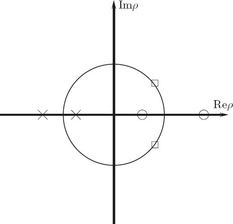
<figcaption id="Fig_4-4"><strong>Figure 4.4</strong> The eigenvalues for fixed points of a two-dimensional Hamiltonian map. The eigenvalues either are real or are complex-conjugate pairs that lie on the unit circle. For each eigenvalue the inverse is also an eigenvalue.</figcaption>
</figure>

<p>Fixed points for which the characteristic multipliers all lie on the unit circle are called <em>elliptic</em> fixed points. The solutions of the linearized variational equations trace ellipses around the fixed point. Elliptic fixed points are linearly stable.</p>

<p>Fixed points with positive real characteristic multipliers are called <em>hyperbolic</em> fixed points. For two-dimensional maps, there is an exponentially expanding subspace and an exponentially contracting subspace. The general solution is a linear combination of these. Fixed points for which the characteristic multipliers are negative are called <em>hyperbolic with reflection</em>.</p>

<p>The edge case of a double root of the characteristic equation is called <em>parabolic</em>. In this case the general solution grows linearly. This happens at points of bifurcation where elliptic points become hyperbolic points or vice versa.</p>
<a id="p300"></a>
<figure>
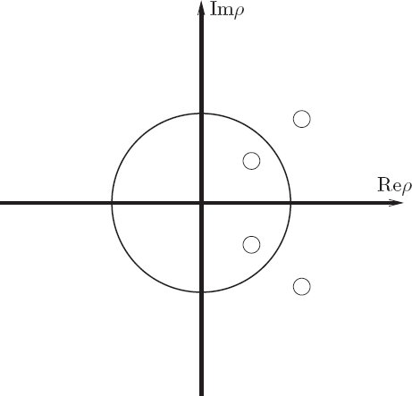
<figcaption id="Fig_4-5"><strong>Figure 4.5</strong> If there is more than one degree of freedom the eigenvalues for fixed points of a Hamiltonian map may lie in a quartet, with two complex-conjugate pairs. The magnitudes of the pairs must be inverses. This enforces the constraint that the expansion produced by the roots with magnitude greater than one is counterbalanced by the contraction produced by the roots with magnitude smaller than one.</figcaption>
</figure>

<p>For two-dimensional Hamiltonian maps these are the only possibilities. For higher-dimensional Hamiltonian maps, we can get combinations of these: some characteristic multipliers can be real and others complex-conjugate pairs. We might imagine that in addition there would be many other types of fixed points that occur in higher dimensions. In fact, there is only one additional type, shown in <a href="chapter004.html#Fig_4-5">figure 4.5</a>. For Hamiltonian systems of arbitrary dimensions it is still the case that for each eigenvalue the complex conjugate and the inverse are also eigenvalues. We can prove this starting from a result in chapter 5. Consider the map <em>T<sub>&#x03B2;</sub></em> of the phase space onto itself that is generated by time evolution of a Hamiltonian system by time increment <em>&#x03B2;</em>. Let <em>z</em> &#x003D; (<em>q</em>, <em>p</em>); then the map <em>T<sub>&#x03B2;</sub></em> satisfies <em>z</em>(<em>t</em> &#x002B; <em>&#x03B2;</em>) &#x003D; <em>T<sub>&#x03B2;</sub></em>(<em>z</em>(<em>t</em>)) for solutions <em>z</em> of Hamilton's equations. We will show in chapter 5 that the derivative of the <a id="p301"></a>map <em>T<sub>&#x03B2;</sub></em> is symplectic, whether or not the starting point is at a fixed point. A 2<em>n</em> &#x00D7; 2<em>n</em> matrix <strong>M</strong> is <em>symplectic</em> if it satisfies</p>

<p class="eqtext" id="disp_4.29"><epub:switch id="mathmlSwitch1020"><epub:case required-namespace="http://www.w3.org/1998/Math/MathML"><math display='block' xmlns="http://www.w3.org/1998/Math/MathML"><mrow><mtable columnalign='left'><mtr columnalign='left'><mtd columnalign='left'><mrow><mstyle mathvariant='bold'><mi>M</mi><mi>J</mi></mstyle><msup><mstyle mathvariant='bold'><mi>M</mi></mstyle><mi mathvariant='script'>T</mi></msup><mo>=</mo><mstyle mathvariant='bold'><mi>J</mi></mstyle><mo>,</mo></mrow></mtd><mtd columnalign='left'><mrow><mo stretchy='false'>(</mo><mn>4.29</mn><mo stretchy='false'>)</mo></mrow></mtd></mtr></mtable></mrow></math></epub:case></epub:switch></p>


<p class="noindent">where <strong>J</strong> is the 2<em>n</em>-dimensional symplectic unit:</p>

<p class="eqtext" id="disp_4.30"><epub:switch id="mathmlSwitch1021"><epub:case required-namespace="http://www.w3.org/1998/Math/MathML"><math display='block' xmlns="http://www.w3.org/1998/Math/MathML"><mrow><mtable><mtr><mtd><mrow><mstyle mathvariant='bold'><mi>J</mi></mstyle><mo>=</mo><mrow><mo>(</mo><mrow><mtable columnalign='left'><mtr columnalign='left'><mtd columnalign='left'><mrow><msub><mstyle mathvariant='bold'><mn>0</mn></mstyle><mrow><mi>n</mi><mo>&#x00D7;</mo><mi>n</mi></mrow></msub></mrow></mtd><mtd columnalign='left'><mrow><msub><mstyle mathvariant='bold'><mn>1</mn></mstyle><mrow><mi>n</mi><mo>&#x00D7;</mo><mi>n</mi></mrow></msub></mrow></mtd></mtr><mtr columnalign='left'><mtd columnalign='left'><mrow><mstyle mathvariant='bold'><mo>-</mo></mstyle><msub><mstyle mathvariant='bold'><mn>1</mn></mstyle><mrow><mi>n</mi><mo>&#x00D7;</mo><mi>n</mi></mrow></msub></mrow></mtd><mtd columnalign='left'><mrow><msub><mstyle mathvariant='bold'><mn>0</mn></mstyle><mrow><mi>n</mi><mo>&#x00D7;</mo><mi>n</mi></mrow></msub></mrow></mtd></mtr></mtable></mrow><mo>)</mo></mrow><mo>,</mo></mrow></mtd><mtd><mrow><mo stretchy='false'>(</mo><mn>4.30</mn><mo stretchy='false'>)</mo></mrow></mtd></mtr></mtable></mrow></math></epub:case></epub:switch></p>


<p class="noindent">with the <em>n</em> &#x00D7; <em>n</em> unit matrix <strong>1</strong><sub><em>n</em>&#x00D7;<em>n</em></sub> and the <em>n</em> &#x00D7; <em>n</em> zero matrix <strong>0</strong><sub><em>n</em>&#x00D7;<em>n</em></sub>.</p>

<p>Using the symplectic property, we can show that in general for each eigenvalue its inverse is also an eigenvalue. Assume <em>&#x03C1;</em> is an eigenvalue, so that <em>&#x03C1;</em> satisfies det(<strong>M</strong> &#x2212; <em>&#x03C1;</em><strong>I</strong>) &#x003D; 0. This equation is unchanged if <strong>M</strong> is replaced by its transpose, so <em>&#x03C1;</em> is also an eigenvalue of <epub:switch id="mathmlSwitch1022"><epub:case required-namespace="http://www.w3.org/1998/Math/MathML"><math xmlns="http://www.w3.org/1998/Math/MathML"><mrow><msup><mstyle mathvariant='bold'><mi>M</mi></mstyle><mi mathvariant='script'>T</mi></msup></mrow></math></epub:case></epub:switch>:</p>

<p class="eqtext" id="disp_4.31"><epub:switch id="mathmlSwitch1023"><epub:case required-namespace="http://www.w3.org/1998/Math/MathML"><math display='block' xmlns="http://www.w3.org/1998/Math/MathML"><mrow><mtable columnalign='left'><mtr columnalign='left'><mtd columnalign='left'><mrow><msup><mstyle mathvariant='bold'><mi>M</mi></mstyle><mi mathvariant='script'>T</mi></msup><mi mathvariant="bold-italic">&#x03B1;</mi><mo>&#x2032;</mo><mo>=</mo><mi>&#x03C1;</mi><mi mathvariant="bold-italic">&#x03B1;</mi><mo>&#x2032;</mo><mo>.</mo></mrow></mtd><mtd columnalign='left'><mrow><mo stretchy='false'>(</mo><mn>4.31</mn><mo stretchy='false'>)</mo></mrow></mtd></mtr></mtable></mrow></math></epub:case></epub:switch></p>


<p class="noindent">From this we can see that</p>

<p class="eqtext" id="disp_4.32"><epub:switch id="mathmlSwitch1024"><epub:case required-namespace="http://www.w3.org/1998/Math/MathML"><math display='block' xmlns="http://www.w3.org/1998/Math/MathML"><mrow><mtable columnalign='left'><mtr columnalign='left'><mtd columnalign='left'><mrow><mfrac><mn>1</mn><mi>&#x03C1;</mi></mfrac><mi mathvariant="bold-italic">&#x03B1;</mi><mo>&#x2032;</mo><mo>=</mo><msup><mrow><mo stretchy='false'>(</mo><msup><mstyle mathvariant='bold'><mi>M</mi></mstyle><mi mathvariant='script'>T</mi></msup><mo stretchy='false'>)</mo></mrow><mrow><mo>&#x2212;</mo><mn>1</mn></mrow></msup><mi mathvariant="bold-italic">&#x03B1;</mi><mo>&#x2032;</mo><mo>.</mo></mrow></mtd><mtd columnalign='left'><mrow><mo stretchy='false'>(</mo><mn>4.32</mn><mo stretchy='false'>)</mo></mrow></mtd></mtr></mtable></mrow></math></epub:case></epub:switch></p>


<p class="noindent">Now, from the symplectic property we have</p>

<p class="eqtext" id="disp_4.33"><epub:switch id="mathmlSwitch1025"><epub:case required-namespace="http://www.w3.org/1998/Math/MathML"><math display='block' xmlns="http://www.w3.org/1998/Math/MathML"><mrow><mtable columnalign='left'><mtr columnalign='left'><mtd columnalign='left'><mrow><mstyle mathvariant='bold'><mi>M</mi><mi>J</mi></mstyle><mo>=</mo><mstyle mathvariant='bold'><mi>J</mi></mstyle><msup><mrow><mo stretchy='false'>(</mo><msup><mstyle mathvariant='bold'><mi>M</mi></mstyle><mi mathvariant='script'>T</mi></msup><mo stretchy='false'>)</mo></mrow><mrow><mo>&#x2212;</mo><mn>1</mn></mrow></msup><mo>.</mo></mrow></mtd><mtd columnalign='left'><mrow><mo stretchy='false'>(</mo><mn>4.33</mn><mo stretchy='false'>)</mo></mrow></mtd></mtr></mtable></mrow></math></epub:case></epub:switch></p>


<p class="noindent">So</p>

<p class="eqtext" id="disp_4.34"><epub:switch id="mathmlSwitch1026"><epub:case required-namespace="http://www.w3.org/1998/Math/MathML"><math display='block' xmlns="http://www.w3.org/1998/Math/MathML"><mrow><mtable columnalign='left'><mtr columnalign='left'><mtd columnalign='left'><mrow><mstyle mathvariant='bold'><mi>M</mi><mi>J</mi></mstyle><mi mathvariant="bold-italic">&#x03B1;</mi><mo>&#x2032;</mo><mo>=</mo><mstyle mathvariant='bold'><mi>J</mi></mstyle><msup><mrow><mo stretchy='false'>(</mo><msup><mstyle mathvariant='bold'><mi>M</mi></mstyle><mi mathvariant='script'>T</mi></msup><mo stretchy='false'>)</mo></mrow><mrow><mo>&#x2212;</mo><mn>1</mn></mrow></msup><mi mathvariant="bold-italic">&#x03B1;</mi><mo>&#x2032;</mo><mo>=</mo><mfrac><mn>1</mn><mi>&#x03C1;</mi></mfrac><mstyle mathvariant='bold'><mi>J</mi></mstyle><mi mathvariant="bold-italic">&#x03B1;</mi><mo>&#x2032;</mo><mo>,</mo></mrow></mtd><mtd columnalign='left'><mrow><mo stretchy='false'>(</mo><mn>4.34</mn><mo stretchy='false'>)</mo></mrow></mtd></mtr></mtable></mrow></math></epub:case></epub:switch></p>


<p class="noindent">and we can conclude that 1/<em>&#x03C1;</em> is an eigenvalue of <strong>M</strong> with the eigenvector <strong>J<em>&#x03B1;</em>&#x2032;</strong>. From the fact that for every eigenvalue its inverse is also an eigenvalue we deduce that the determinant of the transformation <strong>M</strong>, which is the product of the eigenvalues, is one.</p>

<p>Thus the constraints that the eigenvalues must be associated with inverses and complex conjugates yields exactly one new pattern of eigenvalues in higher dimensions. <a href="#Fig_4-5">Figure 4.5</a> shows the only new pattern that is possible.</p>

<p>We have seen that the Lyapunov exponents for fixed points are related to the characteristic multipliers for the fixed points, <a id="p302"></a>so the Hamiltonian constraints on the multipliers correspond to Hamiltonian constraints for Lyapunov exponents at fixed points. For each characteristic multiplier, the inverse is also a characteristic multiplier. This means that at fixed points, for each positive Lyapunov exponent there is a corresponding negative Lyapunov exponent with the same magnitude. It turns out that this is also true if the reference trajectory is not at a fixed point. For Hamiltonian systems, for each positive Lyapunov exponent there is a corresponding negative exponent of equal magnitude.</p>

<p class="noindent1-top-exe" id="Exe_4-4"><strong>Exercise  4.4: Quartet</strong></p>

<p class="noindent">Describe (perhaps by drawing cross sections) the orbits that are possible with quartets.</p>
</section>
<section title="Linear and nonlinear stability">
<h2 class="level2"><strong>Linear and nonlinear stability</strong></h2>

<p class="noindent">A fixed point that is linearly unstable indicates that the full system is unstable at that point. This means that trajectories starting near the fixed point diverge from the fixed point. On the other hand, linear stability of a fixed point does not generally guarantee that the full system is stable at that point. For a two-degree-of-freedom Hamiltonian system, the Kolmogorov&#x2013;Arnold&#x2013;Moser theorem proves under certain conditions that linear stability implies nonlinear stability. In higher dimensions, though, it is not known whether linear stability implies nonlinear stability.</p>
</section>
</section>
<section title="Homoclinic Tangle">
<h1 class="level1" id="h1-25"><a href="toc.html#Rh1-25"><strong>4.3&#160;&#160;&#160;Homoclinic Tangle</strong></a></h1>

<p class="noindent">For the driven pendulum we observe that as the amplitude of the drive is increased the separatrix of the undriven pendulum is where the most prominent chaotic zone appears. Here we examine in great detail the motion in the vicinity of the separatrix. What emerges is a remarkably complicated picture, first discovered by Henri Poincar&#x00E9;. Indeed, Poincar&#x00E9; stated (see the epigraph to this chapter) that the picture that emerged was so complicated that he was not even going to attempt to draw it. We will review the argument leading to the picture, and compute enough of it to convince ourselves of its reality.</p>

<p>The separatrix of the undriven pendulum is made up of two trajectories that are asymptotic to the unstable equilibrium. In the driven pendulum with zero drive, an infinite number of distinct <a id="p303"></a>orbits lie on the separatrix; they are distinguished by the phase of the drive. These orbits are asymptotic to the unstable fixed point both forward and backward in time.</p>
<figure>
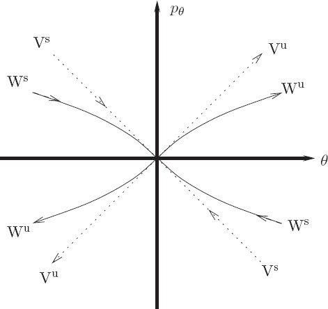
<figcaption id="Fig_4-6"><strong>Figure 4.6</strong> The stable and unstable manifolds of the unstable fixed point for the pendulum are compared to the stable and unstable manifolds of the linearized variational system in the vicinity of the fixed point. The axes are centered at the fixed point (&#x00B1;<em>&#x03C0;</em>, 0). The linear stable and unstable manifolds are labeled by V<sup>s</sup> and V<sup>u</sup> respectively; the nonlinear stable and unstable manifolds are labeled by W<sup>s</sup> and W<sup>u</sup>.</figcaption>
</figure>

<p>Notice that close to the unstable fixed point the sets of points that are asymptotic to the unstable equilibrium must be tangent to the linear variational eigenvectors at the fixed point. (See <a href="chapter004.html#Fig_4-6">figure 4.6</a>.) In a sense, the sets of orbits that are asymptotic to the fixed point are extensions to the nonlinear problem of the sets of orbits that are asymptotic to the fixed point in the linearized problem.</p>

<p>The set of points that are asymptotic to an unstable fixed point forward in time is called the <em>stable manifold</em> of the fixed point. The set of points that are asymptotic to an unstable fixed point backward in time is called the <em>unstable manifold</em>. For the driven pendulum with zero-amplitude drive, all points on the separatrix are asymptotic both forward and backward in time to the unstable <a id="p304"></a>fixed point. So in this case the stable and unstable manifolds coincide.</p>

<p>If the drive amplitude is nonzero then there are still one-dimensional sets of points that are asymptotic to the unstable fixed point forward and backward in time: there are still stable and unstable manifolds. Why? The behavior near the fixed point is described by the linearized variational system. For the linear variational system, points in the space spanned by the unstable eigenvector, when mapped backwards in time, are asymptotic to the fixed point. Points slightly off this curve may initially approach the unstable equilibrium, but eventually will fall away to one side or the other. For the driven system with small drive, there must still be a curve that separates the points that fall away to one side from the points that fall away to the other side. Points on the dividing curve must be asymptotic to the unstable equilibrium. The dividing set cannot have positive area because the map is area preserving.</p>

<p>For the zero-amplitude drive case, the stable and unstable manifolds are contours of the conserved Hamiltonian. For nonzero amplitude the Hamiltonian is no longer conserved, and the stable manifolds and unstable manifolds no longer coincide. This is generally true for non-integrable systems: stable and unstable manifolds do not coincide.</p>

<p>If the stable and unstable manifolds no longer coincide, where do they go? A stable manifold cannot cross another stable manifold, and an unstable manifold cannot cross another unstable manifold, because the crossing point would be asymptotic to two different fixed points. A stable manifold or unstable manifold may not cross itself, as shown below. However, a stable and an unstable manifold may cross one another.</p>

<p>Actually, the stable and unstable manifolds must cross at some point. The only other possibilities are that they run off to infinity or spiral around. We will see that in general there are barriers to running away. Area preservation excludes the existence of attractors, and this can be used to exclude the spiraling case. A finite region of initial conditions between two successive arms of the spiral will eventually run out of area as the spiral progresses.</p>

<p>So the only possibility is that the stable and unstable manifolds cross, as is illustrated in <a href="chapter004.html#Fig_4-7">figure 4.7</a>. The point of crossing of a stable and unstable manifold is called a <em>homoclinic intersection</em> if the stable and unstable manifolds belong to the same unstable <a id="p305"></a>fixed point. It is called a <em>heteroclinic intersection</em> if the stable and unstable manifolds belong to different fixed points.</p>
<figure>
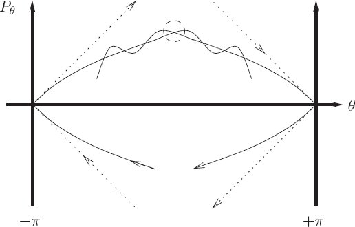
<figcaption id="Fig_4-7"><strong>Figure 4.7</strong> For nonzero drive the stable and unstable manifolds no longer coincide and in general cross. The dashed circle indicates the central intersection. Forward and backward images of this intersection are themselves intersections. Because the orbits are asymptotic to the fixed point there is an infinity of such intersections.</figcaption>
</figure>

<p>If the stable and unstable manifolds cross once then there is an infinite number of other crossings. The intersection point belongs to both the stable and unstable manifolds. That it is on the unstable manifold means that all images forward and backward in time also belong to the unstable manifold, and likewise for points on the stable manifold. Thus all images of the intersection belong to both the stable and unstable manifolds. So these images must be additional crossings of the two manifolds.</p>

<p>We can deduce that there are still more intersections of the stable and unstable manifolds. The maps we are considering not only preserve area but also orientation. In the proof of Liouville's theorem we showed that the determinant of the transformation is one, not just magnitude one. If we consider little segments of the stable and unstable manifolds near the intersection point, then these segments must map near the image of the intersection point. That the map preserves orientation implies that the manifolds are crossing one another in the same sense as at the previous intersection. Therefore there must have been at least one more crossing of the stable and unstable manifolds in between these two. This <a id="p306"></a>is illustrated in <a href="chapter004.html#Fig_4-8">figure 4.8</a>. Of course, all forward and backward images of these intermediate intersections are also intersections.</p>
<figure>
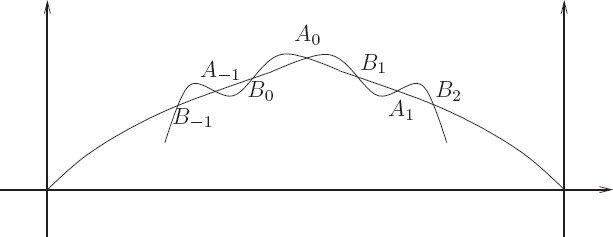
<figcaption id="Fig_4-8"><strong>Figure 4.8</strong> Orientation preservation implies that between an intersection of the stable and unstable manifolds and the image of this intersection there is another intersection. Thus there are two alternating families of intersections. The central intersection and its pre-images and post-images are labeled A<sub><em>i</em></sub>. Another family is labeled B<sub><em>i</em></sub>.</figcaption>
</figure>

<p>As the picture gets more complicated, keep in mind that the stable manifold cannot cross itself and the unstable manifold cannot cross itself. Suppose one did, say by making a little loop. The image of this loop under the map must also be a loop. So if there were a loop there would have to be an infinite number of loops. That would be okay, but what happens as the loop gets close to the fixed point? There would still have to be loops, but then the stable and unstable manifolds would not have the right behavior: the stable and unstable manifolds of the linearized map do not have loops. Therefore, the stable and unstable manifolds cannot cross themselves.<sup><a class="footnote_link" href="#endnote_7" id="endnote_ref_7">7</a></sup></p>

<p>We are not done yet&#x0021; The lobes that are defined by successive crossings of the stable and unstable manifolds enclose a certain area. The map is area preserving so all images of these lobes must have the same area. As the lobes approach the fixed point, we get an infinite number of lobes with a base of exponentially shrinking length. The stable and unstable manifolds cannot cross <a id="p307"></a>themselves, so to pack these lobes together on the plane the lobes must stretch out to preserve area. We see that the length of the lobe must grow roughly exponentially (it may not be uniform in width so it need not be exactly exponential). This exponential lengthening of the lobes no doubt bears some responsibility for the exponential divergence of nearby trajectories of chaotic orbits, but does not prove it. It does, however, suggest a connection between the fact that chaotic orbits appear to occupy an area on the section and the fact that nearby chaotic orbits diverge exponentially.</p>

<p>Actually, the situation is even more complicated. As the lobes stretch, they form tendrils that wrap around the separatrix region. The tendrils of the unstable manifold can cross the tendrils of the stable manifold. Each point of crossing is a new homoclinic intersection, and so each pre- and post-image of this point belongs to both the stable and unstable manifolds, indicating another crossing of these curves. We could go on and on. No wonder Poincar&#x00E9; refused to draw this mess.</p>

<p class="noindent1-top-exe" id="Exe_4-5"><strong>Exercise  4.5: Homoclinic paradox</strong></p>

<p class="noindent">How do we fit an infinite number of copies of a finite area in a finite region, without allowing the stable and unstable manifolds to cross themselves? Resolve this apparent paradox.</p>
<section>
<section title="Computation of Stable and Unstable Manifolds">
<h3 class="level3" id="h3_4-3-1"><a href="toc.html#Rh3_4-3-1"><strong>4.3.1 Computation of Stable and Unstable Manifolds</strong></a></h3>

<p class="noindent">The homoclinic tangle is not just a bad dream. We can actually compute it.</p>

<p>Very close to an unstable fixed point the stable and unstable manifolds become indistinguishable from the rays along the eigen-vectors of the linearized system. So one way to compute the unstable manifold is to take a line of initial conditions close to the fixed point along the unstable manifold of the linearized system and evolve them forward in time. Similarly, the stable manifold can be constructed by taking a line of initial conditions along the stable manifold of the linearized system and evolving them backward in time.</p>

<p>We can do better than this by choosing a parameter (like arc length) along the manifold and for each value of the parameter deciding how many iterations of the map would be required to take the point back to within some small region of the fixed point. We then choose an initial condition along the linearized eigenvectors <a id="p308"></a>and iterate the point back with the map. This idea is implemented in the following program:<sup><a class="footnote_link" href="#endnote_8" id="endnote_ref_8">8</a></sup></p>
<div class="pull-quote">

<p class="pq-noindent"><span class="font1">(define ((unstable-manifold T xe ye dx dy rho eps) param)</span></p>

<p class="pqp1"><span class="font1">(let ((n (floor-&#x003E;exact (/ (log (/ param eps)) (log rho)))))</span></p>
<table class="table1n">
<tr>
<td class="td1" valign="top">
<p class="pqp3"><span class="font1">((iterated-map T n)</span></p></td>
<td class="td1" valign="top"><span class="font1">(&#x002B; xe (<sub>&#x002A;</sub> dx (/ param (expt rho n))))</span></td>
</tr>
<tr>
<td class="td1" valign="top"></td>
<td class="td1" valign="top"><span class="font1">(&#x002B; ye (<sub>&#x002A;</sub> dy (/ param (expt rho n))))</span></td>
</tr>
<tr>
<td class="td1" valign="top"></td>
<td class="td1" valign="top"><span class="font1">make-point</span></td>
</tr>
<tr>
<td class="td1" valign="top"></td>
<td class="td1" valign="top"><span class="font1">(lambda () (error &#x201C;Failed&#x201D;)))))</span></td>
</tr>
</table>
</div>

<p class="noindent">where <span class="font1">T</span> is the map, <span class="font1">xe</span> and <span class="font1">ye</span> are the coordinates of the fixed point, <span class="font1">dx</span> and <span class="font1">dy</span> are components of the linearized eigenvector, <span class="font1">rho</span> is the characteristic multiplier, <span class="font1">eps</span> is a scale within which the linearized map is a good enough approximation to <span class="font1">T</span>, and <span class="font1">param</span> is a continuous parameter along the manifold. The procedure <span class="font1">make-point</span>, supplied as the success continuation for the iterated map, packages two numbers. They can be split with <span class="font1">abscissa</span> and <span class="font1">ordinate</span>.</p>

<p>The program assumes that there is a basic exponential divergence along the manifold&#x2014;that is why we take the logarithm of <span class="font1">param</span> to get initial conditions in the linear regime. This assumption is not exactly true, but it is good enough for now.</p>

<p>The curve is generated by a call to <span class="font1">plot-parametric-fill</span>, which recursively subdivides intervals of the parameter until there are enough points to get a smooth curve.</p>
<div class="pull-quote">

<p class="pq-noindent"><span class="font1">(define (plot-parametric-fill win f a b near?)</span></p>

<p class="pqp1"><span class="font1">(let loop ((a a) (xa (f a)) (b b) (xb (f b)))</span></p>

<p class="pqp2"><span class="font1">(if (not (close-enuf? a b (<sub>&#x002A;</sub> 10 <sub>&#x002A;</sub>machine-epsilon<sub>&#x002A;</sub>)))</span></p>

<p class="pqp3b"><span class="font1">(let ((m (/ (&#x002B; a b) 2)))</span></p>

<p class="pqp4b"><span class="font1">(let ((xm (f m)))</span></p>

<p class="pqp5a"><span class="font1">(plot-point win (abscissa xm) (ordinate xm))</span></p>

<p class="pqp5a"><span class="font1">(if (not (near? xa xm))</span></p>

<p class="pqp8"><span class="font1">(loop a xa m xm))</span></p>

<p class="pqp5a"><span class="font1">(if (not (near? xb xm))</span></p>

<p class="pqp8"><span class="font1">(loop m xm b xb)))))))</span></p>
</div>

<p class="noindent">The <span class="font1">near?</span> argument is a test for whether two points are within a given distance of each other in the graph. Because some coordinates are angle variables, this may involve a principal value comparison. For example, for the driven pendulum section, the <a id="p309"></a>horizontal axis is an angle but the vertical axis is not, so the picture is on a cylinder:</p>
<div class="pull-quote">

<p class="pq-noindent"><span class="font1">(define (cylinder-near? eps)</span></p>

<p class="pqp1"><span class="font1">(let ((eps2 (square eps)))</span></p>

<p class="pqp2"><span class="font1">(lambda (point1 point2)</span></p>

<p class="pqp3"><span class="font1">(&#x003C; (&#x002B; (square ((principal-value pi)</span></p>

<p class="pqp11"><span class="font1">(- (abscissa point1) (abscissa point2))))</span></p>

<p class="pqp6a"><span class="font1">(square (- (ordinate point1) (ordinate point2))))</span></p>

<p class="pqp5"><span class="font1">eps2))))</span></p>
</div>

<p><a href="#Fig_4-9">Figure 4.9</a> shows a computation of the homoclinic tangle for the driven pendulum. The parameters are <em>m</em> &#x003D; 1 kg, <em>g</em> &#x003D; 9.8 m s<sup>&#x2212;2</sup>, <em>l</em> &#x003D; 1 m, <epub:switch id="mathmlSwitch1027"><epub:case required-namespace="http://www.w3.org/1998/Math/MathML"><math xmlns="http://www.w3.org/1998/Math/MathML"><mrow><mi>&#x03C9;</mi><mo>=</mo><mn>4.2</mn><msqrt><mrow><mi>g</mi><mo>/</mo><mi>l</mi></mrow></msqrt></mrow></math></epub:case></epub:switch>, and amplitude <em>A</em> &#x003D; 0.05 m. For reference, <a href="chapter004.html#Fig_4-9">figure 4.9</a> shows a surface of section for these parameters on the same scale.</p>

<p class="noindent1-top-exe" id="Exe_4-6"><strong>Exercise  4.6: Computing homoclinic tangles</strong></p>

<p class="noindent"><strong>a.</strong> Compute stable and unstable manifolds for the standard map.</p>

<p class="noindent1-topa"><strong>b.</strong> Identify the features on the homoclinic tangle that entered the argument about its existence, such as the central crossing of the stable and unstable manifolds, etc.</p>

<p class="noindent1-topa"><strong>c.</strong> Investigate the errors in the process. Are the computed manifolds really correct or a figment of wishful thinking? One could imagine that the errors are exponential and the computed manifolds have nothing to do with the actual manifolds.</p>

<p class="noindent1-topa"><strong>d.</strong> How much actual space is taken up by the homoclinic tangle? Consider a value of the coupling constant <em>K</em> &#x003D; 0.8. Does the homoclinic tangle actually fill out the apparent chaotic zone?</p>
</section>
</section>
</section>
<section title="Integrable Systems">
<h1 class="level1" id="h1-26"><a href="toc.html#Rh1-26"><strong>4.4&#160;&#160;&#160;Integrable Systems</strong></a></h1>

<p class="noindent">Islands appear near commensurabilities, and commensurabilities are present even in integrable systems.<sup><a class="footnote_link" href="#endnote_9" id="endnote_ref_9">9</a></sup> In integrable systems an infinite number of periodic orbits are associated with each commensurability, but upon perturbation only a finite number of periodic orbits survive. How does this happen? First we have to learn more about integrable systems.</p>
<a id="p310"></a>
<figure>
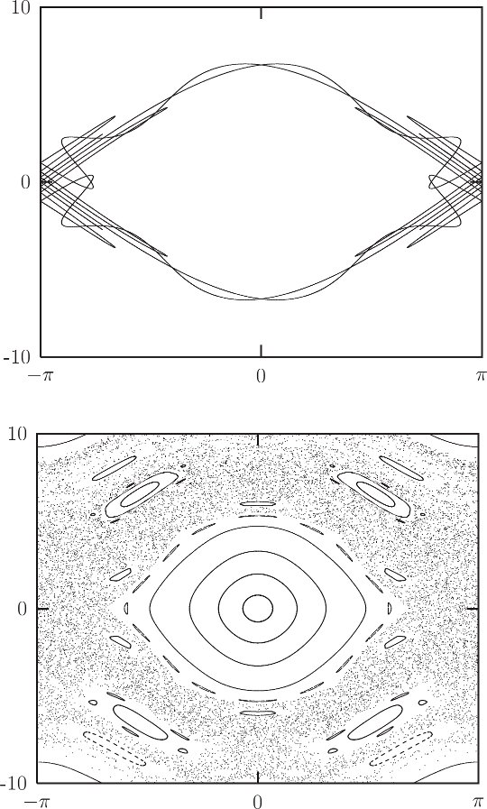
<figcaption id="Fig_4-9"><strong>Figure 4.9</strong> The computed homoclinic tangle for the driven pendulum exhibits the features described in the text. Notice how the excursions of the stable and unstable manifolds become longer and thinner as they approach the unstable fixed point. A surface of section with the same parameters is also shown.</figcaption>
</figure>
<a id="p311"></a>

<p>If an <em>n</em>-degree-of-freedom system has <em>n</em> independent conserved quantities then the solution of the problem can be reduced to quadratures. Such a system is called <em>integrable</em>. Typically, the phase space of integrable systems is divided into regions of qualitatively different behavior. For example, the motion of a pendulum is reducible to quadratures and has three distinct types of solutions: the oscillating solutions and the clockwise and counterclockwise circulating solutions. The different regions of the pendulum phase space are separated by the trajectories that are asymptotic to the unstable equilibrium. It turns out that for any system that is reducible to quadratures, a set of phase-space coordinates can be chosen for each region of the phase space so that the Hamiltonian describing the motion in that region depends only on the momenta. Furthermore, if the phase space is bounded then the generalized coordinates can be chosen to be angles (that are 2<em>&#x03C0;</em>-periodic). The configuration space described by <em>n</em> angles is an <em>n</em>-torus. The momenta conjugate to these angles are called <em>actions</em>. Such phase-space coordinates are called <em>action-angle</em> coordinates. We will see later how to reformulate systems in this way. Here we explore the consequences of such a formulation; this formulation is especially useful for finding out what happens as additional effects are added to integrable problems.</p>
<section title="Orbit types in integrable systems">
<h2 class="level2"><strong>Orbit types in integrable systems</strong></h2>

<p class="noindent">Suppose we have a time-independent <em>n</em>-degree-of-freedom system that is reducible to quadratures. For each region of phase space there is a local formulation of the system so that the evolution of the system is described by a time-independent Hamiltonian that depends only on the momenta. Suppose further that the coordinates are all angles. Let <em>&#x03B8;</em> be the tuple of angles and <em>J</em> be the tuple of conjugate momenta. The Hamiltonian is</p>

<p class="eqtext" id="disp_4.35"><epub:switch id="mathmlSwitch1028"><epub:case required-namespace="http://www.w3.org/1998/Math/MathML"><math display='block' xmlns="http://www.w3.org/1998/Math/MathML"><mrow><mtable columnalign='left'><mtr columnalign='left'><mtd columnalign='left'><mrow><mi>H</mi><mo stretchy='false'>(</mo><mi>t</mi><mo>,</mo><mi>&#x03B8;</mi><mo>,</mo><mi>J</mi><mo stretchy='false'>)</mo><mo>=</mo><mi>f</mi><mo stretchy='false'>(</mo><mi>J</mi><mo stretchy='false'>)</mo><mo>.</mo></mrow></mtd><mtd columnalign='left'><mrow><mo stretchy='false'>(</mo><mn>4.35</mn><mo stretchy='false'>)</mo></mrow></mtd></mtr></mtable></mrow></math></epub:case></epub:switch></p>


<p class="noindent">Hamilton's equations are simply</p>

<p class="eqtext" id="disp_4.36"><epub:switch id="mathmlSwitch1029"><epub:case required-namespace="http://www.w3.org/1998/Math/MathML"><math display='block' xmlns="http://www.w3.org/1998/Math/MathML"><mrow><mtable columnalign='left'><mtr columnalign='left'><mtd columnalign='left'><mrow><mi>D</mi><mi>J</mi><mo stretchy='false'>(</mo><mi>t</mi><mo stretchy='false'>)</mo><mo>=</mo><mo>&#x2212;</mo><msub><mo>&#x2202;</mo><mn>1</mn></msub><mi>H</mi><mo stretchy='false'>(</mo><mi>t</mi><mo>,</mo><mi>&#x03B8;</mi><mo stretchy='false'>(</mo><mi>t</mi><mo stretchy='false'>)</mo><mo>,</mo><mi>J</mi><mo stretchy='false'>(</mo><mi>t</mi><mo stretchy='false'>)</mo><mo stretchy='false'>)</mo><mo>=</mo><mn>0</mn></mrow></mtd><mtd columnalign='left'><mrow></mrow></mtd></mtr><mtr columnalign='left'><mtd columnalign='left'><mrow><mi>D</mi><mi>&#x03B8;</mi><mo stretchy='false'>(</mo><mi>t</mi><mo stretchy='false'>)</mo><mo>=</mo><mtext>&#x2009;</mtext><mtext>&#x2009;</mtext><mtext>&#x2009;</mtext><mtext>&#x2009;</mtext><mtext>&#x2009;</mtext><msub><mo>&#x2202;</mo><mn>2</mn></msub><mi>H</mi><mo stretchy='false'>(</mo><mi>t</mi><mo>,</mo><mi>&#x03B8;</mi><mo stretchy='false'>(</mo><mi>t</mi><mo stretchy='false'>)</mo><mo>,</mo><mi>J</mi><mo stretchy='false'>(</mo><mi>t</mi><mo stretchy='false'>)</mo><mo stretchy='false'>)</mo><mo>=</mo><mi>&#x03C9;</mi><mo stretchy='false'>(</mo><mi>J</mi><mo stretchy='false'>(</mo><mi>t</mi><mo stretchy='false'>)</mo><mo stretchy='false'>)</mo><mo>,</mo></mrow></mtd><mtd columnalign='left'><mrow><mo stretchy='false'>(</mo><mn>4.36</mn><mo stretchy='false'>)</mo></mrow></mtd></mtr></mtable></mrow></math></epub:case></epub:switch></p>


<p class="noindent">where <em>&#x03C9;</em>(<em>J</em>) &#x003D; <em>Df</em>(<em>J</em>) is a tuple of frequencies with a component for each degree of freedom. The momenta are all constant because <a id="p312"></a>the Hamiltonian does not depend on any of the coordinates. The motion of the coordinate angles is uniform; the rates of change of the angles are the frequencies <em>&#x03C9;</em>, which depend only on the constant momenta. Given initial values <em>&#x03B8;</em>(<em>t</em><sub>0</sub>) and <em>J</em>(<em>t</em><sub>0</sub>) at time <em>t</em><sub>0</sub>, the solutions are simple:</p>

<p class="eqtext" id="disp_4.37"><epub:switch id="mathmlSwitch1030"><epub:case required-namespace="http://www.w3.org/1998/Math/MathML"><math display='block' xmlns="http://www.w3.org/1998/Math/MathML"><mrow><mtable columnalign='left'><mtr columnalign='left'><mtd columnalign='left'><mrow><mi>J</mi><mo stretchy='false'>(</mo><mi>t</mi><mo stretchy='false'>)</mo><mo>=</mo><mi>J</mi><mo stretchy='false'>(</mo><msub><mi>t</mi><mn>0</mn></msub><mo stretchy='false'>)</mo></mrow></mtd><mtd columnalign='left'><mrow></mrow></mtd></mtr><mtr columnalign='left'><mtd columnalign='left'><mrow><mi>&#x03B8;</mi><mo stretchy='false'>(</mo><mi>t</mi><mo stretchy='false'>)</mo><mo>=</mo><mi>&#x03C9;</mi><mo stretchy='false'>(</mo><mi>J</mi><mo stretchy='false'>(</mo><msub><mi>t</mi><mn>0</mn></msub><mo stretchy='false'>)</mo><mo stretchy='false'>)</mo><mo stretchy='false'>(</mo><mi>t</mi><mo>&#x2212;</mo><msub><mi>t</mi><mn>0</mn></msub><mo stretchy='false'>)</mo><mo>+</mo><mi>&#x03B8;</mi><mo stretchy='false'>(</mo><msub><mi>t</mi><mn>0</mn></msub><mo stretchy='false'>)</mo><mo>.</mo></mrow></mtd><mtd columnalign='left'><mrow><mo stretchy='false'>(</mo><mn>4.37</mn><mo stretchy='false'>)</mo></mrow></mtd></mtr></mtable></mrow></math></epub:case></epub:switch></p>


<p>Though the solutions are simple, there are two distinct orbit types: periodic orbits and quasiperiodic orbits, depending on the frequency ratios.</p>

<p>A solution is <em>periodic</em> if all the coordinates (and momenta) of the system return to their initial values at some later time. Each coordinate <em>&#x03B8;<sup>i</sup></em> with nonzero frequency <em>&#x03C9;<sup>i</sup></em>(<em>J</em>(<em>t</em><sub>0</sub>)) is periodic with a period <em>&#x03C4;<sub>i</sub></em> &#x003D; 2<em>&#x03C0;</em>/<em>&#x03C9;<sup>i</sup></em>(<em>J</em>(<em>t</em><sub>0</sub>)). The period of the system must therefore be an integer multiple <em>k<sub>i</sub></em> of each of the individual coordinate periods <em>&#x03C4;<sub>i</sub></em>. If the system is periodic with some set of integer multiples, then it is also periodic with any common factors divided out. Thus the period of the system is <em>&#x03C4;</em> &#x003D; (<em>k<sub>i</sub></em>/<em>d</em>)<em>&#x03C4;<sub>i</sub></em> where <em>d</em> is the greatest common divisor of the integers <em>k<sub>i</sub></em>.</p>

<p>For a system with two degrees of freedom, a solution is periodic if there exists a pair of relatively prime integers <em>k</em> and <em>j</em> such that <em>k&#x03C9;</em><sup>0</sup>(<em>J</em>(<em>t</em><sub>0</sub>)) &#x003D; <em>j&#x03C9;</em><sup>1</sup>(<em>J</em>(<em>t</em><sub>0</sub>)). The period of the system is <em>&#x03C4;</em> &#x003D; 2<em>&#x03C0;j</em>/<em>&#x03C9;</em><sup>0</sup>(<em>J</em>(<em>t</em><sub>0</sub>)) &#x003D; 2<em>&#x03C0;k</em>/<em>&#x03C9;</em><sup>1</sup>(<em>J</em>(<em>t</em><sub>0</sub>)); the frequency is <em>&#x03C9;</em><sup>0</sup>(<em>J</em>(<em>t</em><sub>0</sub>))/<em>j</em> &#x003D; <em>&#x03C9;</em><sup>1</sup>(<em>J</em>(<em>t</em><sub>0</sub>))/<em>k</em>. A periodic motion on the 2-torus is illustrated in <a href="chapter004.html#Fig_4-10">figure 4.10</a>.</p>

<p>If the frequencies <em>&#x03C9;<sup>i</sup></em>(<em>J</em>(<em>t</em><sub>0</sub>)) satisfy an integer-coefficient relation <epub:switch id="mathmlSwitch1031"><epub:case required-namespace="http://www.w3.org/1998/Math/MathML"><math xmlns="http://www.w3.org/1998/Math/MathML"><mrow><mstyle displaystyle='true'><msub><mo>&#x2211;</mo><mi>i</mi></msub><mrow><msub><mi>n</mi><mi>i</mi></msub><msup><mi>&#x03C9;</mi><mi>i</mi></msup><mo stretchy='false'>(</mo><mi>J</mi><mo stretchy='false'>(</mo><msub><mi>t</mi><mn>0</mn></msub><mo stretchy='false'>)</mo><mo stretchy='false'>)</mo><mo>=</mo><mn>0</mn></mrow></mstyle></mrow></math></epub:case></epub:switch>, we say that the frequencies satisfy a <em>commen-surability</em>. If there is no commensurability for any nonzero integer coefficients, we say that the frequencies are linearly independent (with respect to the integers) and the solution is <em>quasiperiodic</em>. One can prove that for <em>n</em> incommensurate frequencies all solutions come arbitrarily close to every point in the configuration space.<sup><a class="footnote_link" href="#endnote_10" id="endnote_ref_10">10</a></sup></p>

<p>For a system with two degrees of freedom the solutions in a region described by a particular set of action-angle variables are <a id="p313"></a>either periodic or quasiperiodic.<sup><a class="footnote_link" href="#endnote_11" id="endnote_ref_11">11</a></sup> For systems with more than two degrees of freedom there are trajectories that are neither periodic nor quasiperiodic with <em>n</em> frequencies. These are quasiperiodic with fewer frequencies and dense over a corresponding lower-dimensional torus.</p>
<figure>
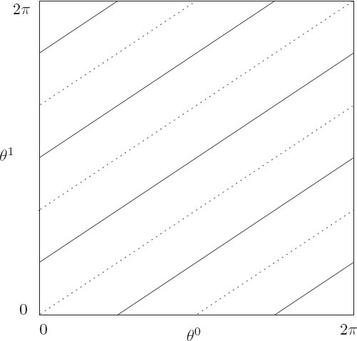
<figcaption id="Fig_4-10"><strong>Figure 4.10</strong> The solid and dotted lines show two periodic trajectories on the configuration coordinate plane. For commensurate frequencies the configuration motion is periodic, independent of the initial angles. In this illustration the frequencies satisfy 2<em>&#x03C9;</em><sup>0</sup>(<em>J</em>(<em>t</em><sub>0</sub>)) &#x003D; 3<em>&#x03C9;</em><sup>1</sup>(<em>J</em>(<em>t</em><sub>0</sub>)). The orbits close after three cycles of <em>&#x03B8;</em><sup>0</sup> and two cycles of <em>&#x03B8;</em><sup>1</sup>, for any initial <em>&#x03B8;</em><sup>0</sup> and <em>&#x03B8;</em><sup>1</sup>.</figcaption>
</figure>
</section>
<section title="Surfaces of section for integrable systems">
<h2 class="level2"><strong>Surfaces of section for integrable systems</strong></h2>

<p class="noindent">As we have seen, in action-angle coordinates the angles move with constant angular frequencies, and the momenta are constant. Thus surfaces of section in action-angle coordinates are particularly simple. We can make surfaces of section for time-independent two-degree-of-freedom systems or one-degree-of-freedom systems <a id="p314"></a>with periodic drive. In the latter case, one of the angles in the action-angle system is the phase of the drive. We make surfaces of section by accumulating points in one pair of canonical coordinates as the other coordinate goes through some particular value, such as zero. If we plot the section points with the angle coordinate on the abscissa and the conjugate momentum on the ordinate then the section points for all trajectories lie on horizontal lines, as illustrated in <a href="chapter004.html#Fig_4-11">figure 4.11</a>.</p>
<figure>
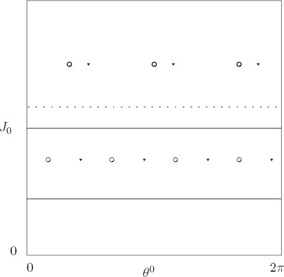
<figcaption id="Fig_4-11"><strong>Figure 4.11</strong> On surfaces of section for systems in action-angle coordinates a trajectory generates points on a horizontal line. Trajectories with frequencies that are commensurate with the sampling frequency produce a finite number of points, independent of the initial angle. Here we use different symbols to indicate section points for distinct trajectories with the same momentum <em>J</em><sub>0</sub>. Trajectories with frequencies that are incommensurate with the sampling frequency fill out a horizontal line densely.</figcaption>
</figure>

<p>For definiteness, let the plane of the surface of section be the (<em>&#x03B8;</em><sup>0</sup>, <em>J</em><sub>0</sub>) plane, and the section condition be <em>&#x03B8;</em><sup>1</sup> &#x003D; 0. The other momentum <em>J</em><sub>1</sub> is chosen so that all the trajectories have the same energy. The momenta are all constant, so for a given trajectory all points that are generated are constrained to a line of constant <em>J</em><sub>0</sub>.</p>
<a id="p315"></a>

<p>The time between section points is the period of <em>&#x03B8;</em><sup>1</sup>: &#x0394;<em>t</em> &#x003D; 2<em>&#x03C0;</em>/<em>&#x03C9;</em><sup>1</sup>(<em>J</em>(<em>t</em><sub>0</sub>)) because a section point is generated for every cycle of <em>&#x03B8;</em><sup>1</sup>. The angle between successive points on the section is <em>&#x03C9;</em><sup>0</sup>(<em>J</em>(<em>t</em><sub>0</sub>))&#x0394;<em>t</em> &#x003D; <em>&#x03C9;</em><sup>0</sup>(<em>J</em>(<em>t</em><sub>0</sub>))2<em>&#x03C0;</em>/<em>&#x03C9;</em><sup>1</sup>(<em>J</em>(<em>t</em><sub>0</sub>)) &#x003D; 2<em>&#x03C0;&#x03BD;</em>(<em>J</em>(<em>t</em><sub>0</sub>)), where <em>&#x03BD;</em>(<em>J</em>) &#x003D; <em>&#x03C9;</em><sup>0</sup>(<em>J</em>)/<em>&#x03C9;</em><sup>1</sup>(<em>J</em>) is called the <em>rotation number</em> of the trajectory. Let <epub:switch id="mathmlSwitch1032"><epub:case required-namespace="http://www.w3.org/1998/Math/MathML"><math xmlns="http://www.w3.org/1998/Math/MathML"><mrow><mover accent='true'><mi>&#x03B8;</mi><mo stretchy="false">&#x02C6;</mo></mover><mrow><mo>(</mo><mi>i</mi><mo>)</mo></mrow></mrow></math></epub:case></epub:switch> and <em>&#x0134;</em>(<em>i</em>) be the <em>i</em>th point (<em>i</em> is an integer) in a sequence of points on the surface of section generated by a solution trajectory:</p>

<p class="eqtext" id="disp_4.38"><epub:switch id="mathmlSwitch1033"><epub:case required-namespace="http://www.w3.org/1998/Math/MathML"><math display='block' xmlns="http://www.w3.org/1998/Math/MathML"><mrow><mtable columnalign='left'><mtr columnalign='left'><mtd columnalign='left'><mrow><mover accent='true'><mi>&#x03B8;</mi><mo stretchy="false">&#x02C6;</mo></mover><mo stretchy='false'>(</mo><mi>i</mi><mo stretchy='false'>)</mo><mo>=</mo><msup><mi>&#x03B8;</mi><mn>0</mn></msup><mo stretchy='false'>(</mo><mi>i</mi><mo>&#x0394;</mo><mi>t</mi><mo>+</mo><msub><mi>t</mi><mn>0</mn></msub><mo stretchy='false'>)</mo></mrow></mtd><mtd columnalign='left'><mrow></mrow></mtd></mtr><mtr columnalign='left'><mtd columnalign='left'><mrow><mover accent='true'><mi>J</mi><mo stretchy="false">&#x02C6;</mo></mover><mo stretchy='false'>(</mo><mi>i</mi><mo stretchy='false'>)</mo><mo>=</mo><msub><mi>J</mi><mn>0</mn></msub><mo stretchy='false'>(</mo><mi>i</mi><mo>&#x0394;</mo><mi>t</mi><mo>+</mo><msub><mi>t</mi><mn>0</mn></msub><mo stretchy='false'>)</mo><mo>,</mo></mrow></mtd><mtd columnalign='left'><mrow><mo stretchy='false'>(</mo><mn>4.38</mn><mo stretchy='false'>)</mo></mrow></mtd></mtr></mtable></mrow></math></epub:case></epub:switch></p>


<p class="noindent">where the system is assumed to be on the section at <em>t</em> &#x003D; <em>t</em><sub>0</sub>. Along a trajectory, the map from one section point <epub:switch id="mathmlSwitch1034"><epub:case required-namespace="http://www.w3.org/1998/Math/MathML"><math xmlns="http://www.w3.org/1998/Math/MathML"><mrow><mo stretchy='false'>(</mo><mover accent='true'><mi>&#x03B8;</mi><mo stretchy="false">&#x02C6;</mo></mover><mrow><mo>(</mo><mi>i</mi><mo>)</mo></mrow><mo>,</mo><mover accent='true'><mi>J</mi><mo stretchy="false">&#x02C6;</mo></mover><mrow><mo>(</mo><mi>i</mi><mo>)</mo></mrow><mo stretchy='false'>)</mo></mrow></math></epub:case></epub:switch> to the next <epub:switch id="mathmlSwitch1035"><epub:case required-namespace="http://www.w3.org/1998/Math/MathML"><math xmlns="http://www.w3.org/1998/Math/MathML"><mrow><mrow><mo>(</mo><mrow><mover accent='true'><mi>&#x03B8;</mi><mo stretchy="false">&#x02C6;</mo></mover><mrow><mo>(</mo><mrow><mi>i</mi><mo>+</mo><mn>1</mn></mrow><mo>)</mo></mrow><mo>,</mo><mover accent='true'><mi>J</mi><mo stretchy="false">&#x02C6;</mo></mover><mrow><mo>(</mo><mrow><mi>i</mi><mo>+</mo><mn>1</mn></mrow><mo>)</mo></mrow></mrow><mo>)</mo></mrow></mrow></math></epub:case></epub:switch> is of the form:<sup><a class="footnote_link" href="#endnote_12" id="endnote_ref_12">12</a></sup></p>

<p class="eqtext" id="disp_4.39"><epub:switch id="mathmlSwitch1036"><epub:case required-namespace="http://www.w3.org/1998/Math/MathML"><math display='block' xmlns="http://www.w3.org/1998/Math/MathML"><mrow><mtable columnalign='left'><mtr columnalign='left'><mtd columnalign='left'><mrow><mrow><mo>(</mo><mrow><mtable columnalign='left'><mtr columnalign='left'><mtd columnalign='left'><mrow><mover accent='true'><mi>&#x03B8;</mi><mo stretchy="false">&#x02C6;</mo></mover><mo stretchy='false'>(</mo><mi>i</mi><mo>+</mo><mn>1</mn><mo stretchy='false'>)</mo></mrow></mtd></mtr><mtr columnalign='left'><mtd columnalign='left'><mrow><mover accent='true'><mi>J</mi><mo stretchy="false">&#x02C6;</mo></mover><mo stretchy='false'>(</mo><mi>i</mi><mo>+</mo><mn>1</mn><mo stretchy='false'>)</mo></mrow></mtd></mtr></mtable></mrow><mo>)</mo></mrow><mo>=</mo><mi>T</mi><mrow><mo>(</mo><mrow><mtable columnalign='left'><mtr columnalign='left'><mtd columnalign='left'><mrow><mover accent='true'><mi>&#x03B8;</mi><mo stretchy="false">&#x02C6;</mo></mover><mo stretchy='false'>(</mo><mi>i</mi><mo stretchy='false'>)</mo></mrow></mtd></mtr><mtr columnalign='left'><mtd columnalign='left'><mrow><mover accent='true'><mi>J</mi><mo stretchy="false">&#x02C6;</mo></mover><mo stretchy='false'>(</mo><mi>i</mi><mo stretchy='false'>)</mo></mrow></mtd></mtr></mtable></mrow><mo>)</mo></mrow><mo>=</mo><mrow><mo>(</mo><mrow><mtable><mtr><mtd><mrow><mover accent='true'><mi>&#x03B8;</mi><mo stretchy="false">&#x02C6;</mo></mover><mo stretchy='false'>(</mo><mi>i</mi><mo stretchy='false'>)</mo><mo>+</mo><mn>2</mn><mi>&#x03C0;</mi><mover accent='true'><mi>&#x03BD;</mi><mo stretchy="false">&#x02C6;</mo></mover><mo stretchy='false'>(</mo><mover accent='true'><mi>J</mi><mo stretchy="false">&#x02C6;</mo></mover><mo stretchy='false'>(</mo><mi>i</mi><mo stretchy='false'>)</mo><mo stretchy='false'>)</mo></mrow></mtd></mtr><mtr><mtd><mrow><mover accent='true'><mi>J</mi><mo stretchy="false">&#x02C6;</mo></mover><mo stretchy='false'>(</mo><mi>i</mi><mo stretchy='false'>)</mo></mrow></mtd></mtr></mtable></mrow><mo>)</mo></mrow><mo>.</mo></mrow></mtd><mtd columnalign='left'><mrow><mo stretchy='false'>(</mo><mn>4.39</mn><mo stretchy='false'>)</mo></mrow></mtd></mtr></mtable></mrow></math></epub:case></epub:switch></p>

<p class="noindent">As a function of the action on the section, the rotation number is <epub:switch id="mathmlSwitch1037"><epub:case required-namespace="http://www.w3.org/1998/Math/MathML"><math xmlns="http://www.w3.org/1998/Math/MathML"><mrow><mover accent='true'><mi>v</mi><mo stretchy="false">&#x02C6;</mo></mover><mrow><mo>(</mo><mrow><mover accent='true'><mi>J</mi><mo stretchy="false">&#x02C6;</mo></mover><mrow><mo>(</mo><mn>0</mn><mo>)</mo></mrow></mrow><mo>)</mo></mrow><mo>=</mo><mi>v</mi><mrow><mo>(</mo><mrow><mover accent='true'><mi>J</mi><mo stretchy="false">&#x02C6;</mo></mover><mrow><mo>(</mo><mn>0</mn><mo>)</mo></mrow><mo>,</mo><msub><mi>J</mi><mn>1</mn></msub><mrow><mo>(</mo><mrow><msub><mi>t</mi><mn>0</mn></msub></mrow><mo>)</mo></mrow></mrow><mo>)</mo></mrow></mrow></math></epub:case></epub:switch>, where <em>J</em><sub>1</sub>(<em>t</em><sub>0</sub>) has the value required to be on the section, as for example by giving the correct energy. If the rotation number function <epub:switch id="mathmlSwitch1038"><epub:case required-namespace="http://www.w3.org/1998/Math/MathML"><math xmlns="http://www.w3.org/1998/Math/MathML"><mover accent='true'><mi>&#x03BD;</mi><mo stretchy="false">&#x02C6;</mo></mover></math></epub:case></epub:switch> is strictly monotonic in the action coordinate on the section then the map is called a <em>twist map</em>.<sup><a class="footnote_link" href="#endnote_13" id="endnote_ref_13">13</a></sup></p>

<p>On a surface of section the different types of orbits generate different patterns. If the two frequencies are commensurate, then the trajectory is periodic and only a finite number of points are generated on the surface of section. Each of the periodic solutions illustrated in <a href="chapter004.html#Fig_4-10">figure 4.10</a> generates two points on the surface of section defined by <em>&#x03B8;</em><sup>1</sup> &#x003D; 0. If the frequencies are commensurate they satisfy a relation of the form <em>k&#x03C9;</em><sup>0</sup>(<em>J</em>(<em>t</em><sub>0</sub>)) &#x003D; <em>j&#x03C9;</em><sup>1</sup>(<em>J</em>(<em>t</em><sub>0</sub>)), where <em>J</em>(<em>t</em><sub>0</sub>) &#x003D; (<em>&#x0134;</em>(0), <em>J</em><sub>1</sub>(<em>t</em><sub>0</sub>)) is the initial and constant value of the momentum tuple. The motion is periodic with frequency <em>&#x03C9;</em><sup>0</sup>(<em>J</em>(<em>t</em><sub>0</sub>))/<em>j</em> &#x003D; <em>&#x03C9;</em><sup>1</sup>(<em>J</em>(<em>t</em><sub>0</sub>))/<em>k</em>, so the period is 2<em>&#x03C0;j</em>/<em>&#x03C9;</em><sup>0</sup>(<em>J</em>(<em>t</em><sub>0</sub>)) &#x003D; 2<em>&#x03C0;k</em>/<em>&#x03C9;</em><sup>1</sup>(<em>J</em>(<em>t</em><sub>0</sub>)). Thus this periodic orbit generates <em>k</em> points on this <a id="p316"></a>surface of section. For trajectories with commensurate frequencies the rotation number is rational: <epub:switch id="mathmlSwitch1039"><epub:case required-namespace="http://www.w3.org/1998/Math/MathML"><math xmlns="http://www.w3.org/1998/Math/MathML"><mrow><mover accent='true'><mi>v</mi><mo stretchy="false">&#x02C6;</mo></mover><mrow><mo>(</mo><mrow><mover accent='true'><mi>J</mi><mo stretchy="false">&#x02C6;</mo></mover><mrow><mo>(</mo><mn>0</mn><mo>)</mo></mrow></mrow><mo>)</mo></mrow><mo>=</mo><mi>v</mi><mrow><mo>(</mo><mrow><mover accent='true'><mi>J</mi><mo stretchy="false">&#x02C6;</mo></mover><mrow><mo>(</mo><mn>0</mn><mo>)</mo></mrow><mo>,</mo><msub><mi>J</mi><mn>1</mn></msub><mrow><mo>(</mo><mrow><msub><mi>t</mi><mn>0</mn></msub></mrow><mo>)</mo></mrow></mrow><mo>)</mo></mrow><mo>=</mo><mi>j</mi><mo>/</mo><mi>k</mi></mrow></math></epub:case></epub:switch>. The coordinate <em>&#x03B8;</em><sup>1</sup> makes <em>k</em> cycles while the coordinate <em>&#x03B8;</em><sup>0</sup> makes <em>j</em> cycles (<a href="chapter004.html#Fig_4-10">figure 4.10</a> shows a system with a rotation number of 3/2). The frequencies depend on the momenta but not on the coordinates, so the motion is periodic with the same period and rotation number for all initial angles given these momenta. Thus there is a continuous family of periodic orbits with different initial angles.</p>

<p>If the two frequencies are incommensurate, then the 2-torus is filled densely. Thus the line on which the section points are generated is filled densely. Again, this is the case for any initial coordinates, because the frequencies depend only on the momenta. There are infinitely many such orbits that are distinct for a given set of frequencies.<sup><a class="footnote_link" href="#endnote_14" id="endnote_ref_14">14</a></sup></p>
</section>
</section>
<section title="Poincar&#x00E9;&#x2013;Birkhoff Theorem">
<h1 class="level1" id="h1-26a"><a href="toc.html#Rh1-26a"><strong>4.5&#160;&#160;&#160;Poincar&#x00E9;&#x2013;Birkhoff Theorem</strong></a></h1>

<p class="noindent">How does this picture change if we add additional effects?</p>

<p>One peculiar feature of the orbits in integrable systems is that there are continuous families of periodic orbits. The initial angles do not matter; the frequencies depend only on the actions. Contrast this with our earlier experience with surfaces of section in which periodic points are isolated, and associated with island chains. Henri Poincar&#x00E9; and George Birkhoff investigated periodic orbits of near-integrable systems, and found that typically for each rational rotation number there are a finite number of periodic points, half of which are linearly stable and half linearly unstable. Here we show how to construct the Poincar&#x00E9;&#x2013;Birkhoff periodic points.</p>

<p>Consider an integrable system described in action-angle coordinates by the Hamiltonian <em>H</em><sub>0</sub>(<em>t</em>, <em>&#x03B8;</em>, <em>J</em>) &#x003D; <em>f</em>(<em>J</em>). We add some small additional effect described by the term <em>H</em><sub>1</sub> in the Hamiltonian</p>

<p class="eqtext" id="disp_4.40"><epub:switch id="mathmlSwitch1040"><epub:case required-namespace="http://www.w3.org/1998/Math/MathML"><math display='block' xmlns="http://www.w3.org/1998/Math/MathML"><mrow><mtable><mtr><mtd><mrow><mi>H</mi><mo>=</mo><msub><mi>H</mi><mn>0</mn></msub><mo>+</mo><mi mathvariant="italic">&#x03F5;</mi><msub><mi>H</mi><mn>1</mn></msub><mo>.</mo></mrow></mtd><mtd><mrow><mo stretchy='false'>(</mo><mn>4.40</mn><mo stretchy='false'>)</mo></mrow></mtd></mtr></mtable></mrow></math></epub:case></epub:switch></p>


<p class="noindent">An example of such a system is the periodically driven pendulum with small-amplitude drive. For zero-amplitude drive the driven <a id="p317"></a>pendulum is integrable, but not for small drive. Unfortunately, we do not yet have the tools to develop action-angle coordinates for the pendulum. A simpler problem that is already in action-angle form is the driven rotor, which is just the driven pendulum with gravity turned off. We can implement this by turning our driven pendulum on its side, making the plane of the pendulum horizontal. A Hamiltonian for the driven rotor is</p>

<p class="eqtext" id="disp_4.41"><epub:switch id="mathmlSwitch1041"><epub:case required-namespace="http://www.w3.org/1998/Math/MathML"><math display='block' xmlns="http://www.w3.org/1998/Math/MathML"><mrow><mtable><mtr><mtd><mrow><mi>H</mi><mo stretchy='false'>(</mo><mi>t</mi><mo>,</mo><mi>&#x03B8;</mi><mo>,</mo><msub><mi>p</mi><mi>&#x03B8;</mi></msub><mo stretchy='false'>)</mo><mo>=</mo><mfrac><mrow><msubsup><mi>p</mi><mi>&#x03B8;</mi><mn>2</mn></msubsup></mrow><mrow><mn>2</mn><mi>m</mi><msup><mi>l</mi><mn>2</mn></msup></mrow></mfrac><mo>+</mo><mi>m</mi><mi>l</mi><mi>A</mi><msup><mi>&#x03C9;</mi><mn>2</mn></msup><mtext>&#x2009;</mtext><mi>cos</mi><mo>&#x2061;</mo><mtext>&#x2009;</mtext><mi>&#x03C9;</mi><mi>t</mi><mtext>&#x2009;</mtext><mi>cos</mi><mo>&#x2061;</mo><mtext>&#x2009;</mtext><mi>&#x03B8;</mi><mo>,</mo></mrow></mtd><mtd><mrow><mo stretchy='false'>(</mo><mn>4.41</mn><mo stretchy='false'>)</mo></mrow></mtd></mtr></mtable></mrow></math></epub:case></epub:switch></p>

<p class="noindent">where <em>A</em> is the amplitude of the drive with frequency <em>&#x03C9;</em>, <em>m</em> is the mass of the bob, and <em>l</em> is the length of the rotor. For zero amplitude, the Hamiltonian is already in action-angle form in that it depends only on the momentum <em>p<sub>&#x03B8;</sub></em> and the coordinate is an angle.</p>

<p>For an integrable system, the map generated on the surface of section is of the twist map form (<a href="chapter004.html#disp_4.39">4.39</a>). With the addition of a small perturbation to the Hamiltonian, small corrections are added to the map</p>

<p class="eqtext" id="disp_4.42"><epub:switch id="mathmlSwitch1042"><epub:case required-namespace="http://www.w3.org/1998/Math/MathML"><math display='block' xmlns="http://www.w3.org/1998/Math/MathML"><mrow><mtable columnalign='left'><mtr columnalign='left'><mtd columnalign='left'><mrow><mrow><mo>(</mo><mrow><mtable><mtr><mtd><mrow><mover accent='true'><mi>&#x03B8;</mi><mo stretchy="false">&#x02C6;</mo></mover><mo stretchy='false'>(</mo><mi>i</mi><mo>+</mo><mn>1</mn><mo stretchy='false'>)</mo></mrow></mtd></mtr><mtr><mtd><mrow><mover accent='true'><mi>J</mi><mo stretchy="false">&#x02C6;</mo></mover><mo stretchy='false'>(</mo><mi>i</mi><mo>+</mo><mn>1</mn><mo stretchy='false'>)</mo></mrow></mtd></mtr></mtable></mrow><mo>)</mo></mrow></mrow></mtd><mtd columnalign='left'><mrow><mo>=</mo><msub><mi>T</mi><mi mathvariant="italic">&#x03F5;</mi></msub><mrow><mo>(</mo><mrow><mtable><mtr><mtd><mrow><mover accent='true'><mi>&#x03B8;</mi><mo stretchy="false">&#x02C6;</mo></mover><mo stretchy='false'>(</mo><mi>i</mi><mo stretchy='false'>)</mo></mrow></mtd></mtr><mtr><mtd><mrow><mover accent='true'><mi>J</mi><mo stretchy="false">&#x02C6;</mo></mover><mo stretchy='false'>(</mo><mi>i</mi><mo stretchy='false'>)</mo></mrow></mtd></mtr></mtable></mrow><mo>)</mo></mrow></mrow></mtd><mtd columnalign='left'><mrow></mrow></mtd></mtr><mtr columnalign='left'><mtd columnalign='left'><mrow></mrow></mtd><mtd columnalign='left'><mrow><mo>=</mo><mrow><mo>(</mo><mrow><mtable><mtr><mtd><mrow><mover accent='true'><mi>&#x03B8;</mi><mo stretchy="false">&#x02C6;</mo></mover><mo stretchy='false'>(</mo><mi>i</mi><mo stretchy='false'>)</mo><mo>+</mo><mn>2</mn><mi>&#x03C0;</mi><mover accent='true'><mi>&#x03BD;</mi><mo stretchy="false">&#x02C6;</mo></mover><mo stretchy='false'>(</mo><mover accent='true'><mi>J</mi><mo stretchy="false">&#x02C6;</mo></mover><mo stretchy='false'>(</mo><mi>i</mi><mo stretchy='false'>)</mo><mo stretchy='false'>)</mo><mo>+</mo><mi mathvariant="italic">&#x03F5;</mi><mi>f</mi><mo stretchy='false'>(</mo><mover accent='true'><mi>&#x03B8;</mi><mo stretchy="false">&#x02C6;</mo></mover><mo stretchy='false'>(</mo><mi>i</mi><mo stretchy='false'>)</mo><mo>,</mo><mover accent='true'><mi>J</mi><mo stretchy="false">&#x02C6;</mo></mover><mo stretchy='false'>(</mo><mi>i</mi><mo stretchy='false'>)</mo><mo stretchy='false'>)</mo></mrow></mtd></mtr><mtr><mtd><mrow><mover accent='true'><mi>J</mi><mo stretchy="false">&#x02C6;</mo></mover><mo stretchy='false'>(</mo><mi>i</mi><mo stretchy='false'>)</mo><mo>+</mo><mi mathvariant="italic">&#x03F5;</mi><mi>g</mi><mo stretchy='false'>(</mo><mover accent='true'><mi>&#x03B8;</mi><mo stretchy="false">&#x02C6;</mo></mover><mo stretchy='false'>(</mo><mi>i</mi><mo stretchy='false'>)</mo><mo>,</mo><mover accent='true'><mi>J</mi><mo stretchy="false">&#x02C6;</mo></mover><mo stretchy='false'>(</mo><mi>i</mi><mo stretchy='false'>)</mo><mo stretchy='false'>)</mo></mrow></mtd></mtr></mtable></mrow><mo>)</mo></mrow><mo>.</mo></mrow></mtd><mtd columnalign='left'><mrow><mo stretchy='false'>(</mo><mn>4.42</mn><mo stretchy='false'>)</mo></mrow></mtd></mtr></mtable></mrow></math></epub:case></epub:switch></p>

<p class="noindent">Both the map <em>T</em> and the perturbed map <em>T<sub>&#x03F5;</sub></em> are area preserving because the maps are generated as surfaces of section for Hamiltonian systems.</p>

<p>Suppose we are interested in determining whether periodic orbits of a particular rational rotation number <epub:switch id="mathmlSwitch1043"><epub:case required-namespace="http://www.w3.org/1998/Math/MathML"><math xmlns="http://www.w3.org/1998/Math/MathML"><mrow><mover accent='true'><mi>v</mi><mo stretchy="false">&#x02C6;</mo></mover><mrow><mo>(</mo><mrow><mover accent='true'><mi>J</mi><mo stretchy="false">&#x02C6;</mo></mover><mrow><mo>(</mo><mn>0</mn><mo>)</mo></mrow></mrow><mo>)</mo></mrow><mo>=</mo><mi>j</mi><mo>/</mo><mi>k</mi></mrow></math></epub:case></epub:switch> exist in some interval of the action <em>&#x03B1;</em> &#x003C; <em>&#x0134;</em>(0) &#x003C; <em>&#x03B2;</em>. If the rotation number is strictly monotonic in this interval and orbits with the rotation number <epub:switch id="mathmlSwitch1044"><epub:case required-namespace="http://www.w3.org/1998/Math/MathML"><math xmlns="http://www.w3.org/1998/Math/MathML"><mrow><mover accent='true'><mi>v</mi><mo stretchy="false">&#x02C6;</mo></mover><mrow><mo>(</mo><mrow><mover accent='true'><mi>J</mi><mo stretchy="false">&#x02C6;</mo></mover><mrow><mo>(</mo><mn>0</mn><mo>)</mo></mrow></mrow><mo>)</mo></mrow></mrow></math></epub:case></epub:switch> occur in this interval for the unperturbed map <em>T</em>, then by a simple construction we can show that periodic orbits with this rotation number also exist for <em>T<sub>&#x03F5;</sub></em> for sufficiently small <em>&#x03F5;</em>.</p>

<p>If a point is periodic for rational rotation number <epub:switch id="mathmlSwitch1045"><epub:case required-namespace="http://www.w3.org/1998/Math/MathML"><math xmlns="http://www.w3.org/1998/Math/MathML"><mrow><mover accent='true'><mi>v</mi><mo stretchy="false">&#x02C6;</mo></mover><mrow><mo>(</mo><mrow><mover accent='true'><mi>J</mi><mo stretchy="false">&#x02C6;</mo></mover><mrow><mo>(</mo><mn>0</mn><mo>)</mo></mrow></mrow><mo>)</mo></mrow><mo>=</mo><mi>j</mi><mo>/</mo><mi>k</mi></mrow></math></epub:case></epub:switch>, with relatively prime <em>j</em> and <em>k</em>, we expect <em>k</em> distinct images of the point to appear on the section. So if we consider the <em>k</em>th iterate of the map then the point is a fixed point of the map. For rational rotation number <em>j</em>/<em>k</em> the map <em>T<sup>k</sup></em> has a fixed point for every initial angle.</p>
<a id="p318"></a>
<figure>
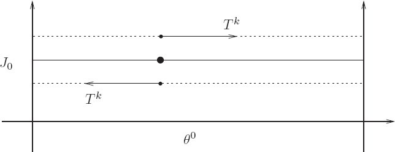
<figcaption id="Fig_4-12"><strong>Figure 4.12</strong> The map <em>T<sup>k</sup></em> has a line of fixed points if the rotation number is the rational <em>j</em>/<em>k</em>. Points above this line map to larger <em>&#x03B8;</em><sup>0</sup>; points below this line map to smaller <em>&#x03B8;</em><sup>0</sup>.</figcaption>
</figure>
<figure>
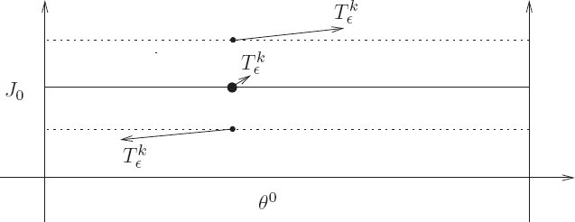
<figcaption id="Fig_4-13"><strong>Figure 4.13</strong> The map <epub:switch id="mathmlSwitch1046"><epub:case required-namespace="http://www.w3.org/1998/Math/MathML"><math xmlns="http://www.w3.org/1998/Math/MathML"><mrow><msubsup><mi>T</mi><mi mathvariant="italic">&#x03F5;</mi><mi>k</mi></msubsup></mrow></math></epub:case></epub:switch> is slightly different from <em>T<sup>k</sup></em>, but above the central region points still map to larger <em>&#x03B8;</em><sup>0</sup> and below the central region they map to smaller <em>&#x03B8;</em><sup>0</sup>. By continuity there are points between for which <em>&#x03B8;</em><sup>0</sup> does not change.</figcaption>
</figure>

<p>The rotation number of the map <em>T</em> is strictly monotonic. Suppose for definiteness we assume the rotation number <epub:switch id="mathmlSwitch1047"><epub:case required-namespace="http://www.w3.org/1998/Math/MathML"><math xmlns="http://www.w3.org/1998/Math/MathML"><mrow><mover accent='true'><mi>v</mi><mo stretchy="false">&#x02C6;</mo></mover><mrow><mo>(</mo><mrow><mover accent='true'><mi>J</mi><mo stretchy="false">&#x02C6;</mo></mover><mrow><mo>(</mo><mn>0</mn><mo>)</mo></mrow></mrow><mo>)</mo></mrow></mrow></math></epub:case></epub:switch> increases with <em>&#x0134;</em>(0). For some <em>&#x0134;</em><sup>&#x2217;</sup> such that <em>&#x03B1;</em> &#x003C; <em>&#x0134;</em><sup>&#x2217;</sup> &#x003C; <em>&#x03B2;</em> the rotation number is <em>j</em>/<em>k</em>, and (<epub:switch id="mathmlSwitch1048"><epub:case required-namespace="http://www.w3.org/1998/Math/MathML"><math xmlns="http://www.w3.org/1998/Math/MathML"><mrow><msup><mover accent='true'><mi>&#x03B8;</mi><mo stretchy="false">&#x02C6;</mo></mover><mo>&#x2217;</mo></msup><mo>,</mo><msup><mover accent='true'><mi>J</mi><mo stretchy="false">&#x02C6;</mo></mover><mo>&#x2217;</mo></msup></mrow></math></epub:case></epub:switch>) is a fixed point of <em>T<sup>k</sup></em> for any initial <epub:switch id="mathmlSwitch1049"><epub:case required-namespace="http://www.w3.org/1998/Math/MathML"><math xmlns="http://www.w3.org/1998/Math/MathML"><mrow><msup><mover accent='true'><mi>&#x03B8;</mi><mo stretchy="false">&#x02C6;</mo></mover><mo>&#x2217;</mo></msup></mrow></math></epub:case></epub:switch>. For <em>&#x0134;</em><sup>&#x2217;</sup> the rotation number of <em>T<sup>k</sup></em> is zero. The rotation number of the map <em>T</em> is monotonically increasing so for <em>&#x0134;</em>(0) &#x003E; <em>&#x0134;</em><sup>&#x2217;</sup> the rotation number of <em>T<sup>k</sup></em> is positive, and for <em>&#x0134;</em>(0) &#x003C; <em>&#x0134;</em><sup>&#x2217;</sup> the rotation number of <em>T<sup>k</sup></em> is negative, as long as <em>&#x0134;</em>(0) is not too far from <em>&#x0134;</em><sup>&#x2217;</sup>. See <a href="chapter004.html#Fig_4-12">figure 4.12</a>.</p>
<a id="p319"></a>
<figure>
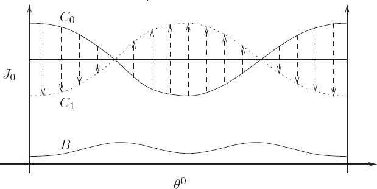
<figcaption id="Fig_4-14"><strong>Figure 4.14</strong> The solid curve <em>C</em><sub>0</sub> consists of points that map to the same <em>&#x03B8;</em><sup>0</sup> under <epub:switch id="mathmlSwitch1050"><epub:case required-namespace="http://www.w3.org/1998/Math/MathML"><math xmlns="http://www.w3.org/1998/Math/MathML"><mrow><msubsup><mi>T</mi><mi mathvariant="italic">&#x03F5;</mi><mi>k</mi></msubsup></mrow></math></epub:case></epub:switch>. The image <em>C</em><sub>1</sub> of <em>C</em><sub>0</sub> under <epub:switch id="mathmlSwitch1051"><epub:case required-namespace="http://www.w3.org/1998/Math/MathML"><math xmlns="http://www.w3.org/1998/Math/MathML"><mrow><msubsup><mi>T</mi><mi mathvariant="italic">&#x03F5;</mi><mi>k</mi></msubsup></mrow></math></epub:case></epub:switch> is the dotted curve. Area preservation implies that these curves cross.</figcaption>
</figure>

<p>Now consider the map <epub:switch id="mathmlSwitch1052"><epub:case required-namespace="http://www.w3.org/1998/Math/MathML"><math xmlns="http://www.w3.org/1998/Math/MathML"><mrow><msubsup><mi>T</mi><mi mathvariant="italic">&#x03F5;</mi><mi>k</mi></msubsup></mrow></math></epub:case></epub:switch>. In general, for small <em>&#x03F5;</em>, points map to slightly different points under <em>T<sub>&#x03F5;</sub></em> than they do under <em>T</em>, but not too different. So we can expect that there is still some interval in <em>&#x0134;</em>(0) near <em>&#x0134;</em><sup>&#x2217;</sup> such that for <em>&#x0134;</em>(0) in the upper end of the interval, <epub:switch id="mathmlSwitch1053"><epub:case required-namespace="http://www.w3.org/1998/Math/MathML"><math xmlns="http://www.w3.org/1998/Math/MathML"><mrow><msubsup><mi>T</mi><mi mathvariant="italic">&#x03F5;</mi><mi>k</mi></msubsup></mrow></math></epub:case></epub:switch> maps points to larger <em>&#x03B8;</em><sup>0</sup>, and for points in the lower end of the interval, <epub:switch id="mathmlSwitch1054"><epub:case required-namespace="http://www.w3.org/1998/Math/MathML"><math xmlns="http://www.w3.org/1998/Math/MathML"><mrow><msubsup><mi>T</mi><mi mathvariant="italic">&#x03F5;</mi><mi>k</mi></msubsup></mrow></math></epub:case></epub:switch> maps points to smaller <em>&#x03B8;</em><sup>0</sup>. If this is the case then for every <epub:switch id="mathmlSwitch1055"><epub:case required-namespace="http://www.w3.org/1998/Math/MathML"><math xmlns="http://www.w3.org/1998/Math/MathML"><mrow><mover accent='true'><mi>&#x03B8;</mi><mo stretchy="false">&#x02C6;</mo></mover><mrow><mo>(</mo><mn>0</mn><mo>)</mo></mrow></mrow></math></epub:case></epub:switch> there is a point somewhere in the interval, some <epub:switch id="mathmlSwitch1056"><epub:case required-namespace="http://www.w3.org/1998/Math/MathML"><math xmlns="http://www.w3.org/1998/Math/MathML"><mrow><msup><mover accent='true'><mi>J</mi><mo stretchy="false">&#x02C6;</mo></mover><mo>+</mo></msup><mrow><mo>(</mo><mrow><mover accent='true'><mi>&#x03B8;</mi><mo stretchy="false">&#x02C6;</mo></mover><mrow><mo>(</mo><mn>0</mn><mo>)</mo></mrow></mrow><mo>)</mo></mrow></mrow></math></epub:case></epub:switch>, for which <em>&#x03B8;</em><sup>0</sup> does not change, by continuity. These are not fixed points because the momentum <em>J</em><sub>0</sub> generally changes. See <a href="chapter004.html#Fig_4-13">figure 4.13</a>.</p>

<p>The map is continuous, so we can expect that <em>&#x0134;</em><sup>&#x002B;</sup> is a continuous function of the <em>&#x03B8;</em><sup>0</sup>. The twist-map condition (see footnote <a class="footnote_link" href="#endnote_13">13</a>) ensures that <em>&#x0134;</em><sup>&#x002B;</sup> is periodic, so <em>&#x0134;</em><sup>&#x002B;</sup>(0) &#x003D; <em>&#x0134;</em><sup>&#x002B;</sup>(2<em>&#x03C0;</em>). The twist-map condition also guarantees that for sufficiently small perturbations there cannot be more than one radially-mapping point for any angle. So the set of points that do not change <em>&#x03B8;</em><sup>0</sup> under <epub:switch id="mathmlSwitch1057"><epub:case required-namespace="http://www.w3.org/1998/Math/MathML"><math xmlns="http://www.w3.org/1998/Math/MathML"><mrow><msubsup><mi>T</mi><mi mathvariant="italic">&#x03F5;</mi><mi>k</mi></msubsup></mrow></math></epub:case></epub:switch> form some periodic function of <em>&#x03B8;</em><sup>0</sup>. Call this curve <em>C</em><sub>0</sub>. See <a href="chapter004.html#Fig_4-14">figure 4.14</a>.</p>

<p>The map <epub:switch id="mathmlSwitch1058"><epub:case required-namespace="http://www.w3.org/1998/Math/MathML"><math xmlns="http://www.w3.org/1998/Math/MathML"><mrow><msubsup><mi>T</mi><mi mathvariant="italic">&#x03F5;</mi><mi>k</mi></msubsup></mrow></math></epub:case></epub:switch> takes the curve <em>C</em><sub>0</sub> to another curve <em>C</em><sub>1</sub> that, like <em>C</em><sub>0</sub>, is continuous and periodic. The two curves <em>C</em><sub>0</sub> and <em>C</em><sub>1</sub> must cross each other, as a consequence of area preservation. How do we see this? Typically, there is a lower boundary or upper boundary in <em>J</em><sub>0</sub> for the evolution. In some situations, we have such a lower boundary because <em>J</em><sub>0</sub> cannot be negative. For example, in action-angle variables for motion near an elliptic fixed point we will see <a id="p320"></a>that the action is the area enclosed on the phase plane, which cannot be negative. For other situations, we might use the fact that there are invariant curves for large positive or negative <em>J</em><sub>0</sub>. In any case, suppose there is such a barrier <em>B</em>. Then the area of the region between the barrier and <em>C</em><sub>0</sub> must be equal to the area of the image of this region, which is the region between the barrier and <em>C</em><sub>1</sub>. So if <em>C</em><sub>0</sub> and <em>C</em><sub>1</sub> are not the same curve they must cross to contain the same area. In fact, they must cross an even number of times: they are both periodic, so if they cross once they must cross again to get back to the same side they started on. The points at which the curves <em>C</em><sub>0</sub> and <em>C</em><sub>1</sub> cross are fixed points because the angle does not change (that is what it means to be on <em>C</em><sub>0</sub>) and the action does not change (that is what it means for <em>C</em><sub>0</sub> and <em>C</em><sub>1</sub> to be the same at this point). So we have deduced that there must be an even number of fixed points of <epub:switch id="mathmlSwitch1059"><epub:case required-namespace="http://www.w3.org/1998/Math/MathML"><math xmlns="http://www.w3.org/1998/Math/MathML"><mrow><msubsup><mi>T</mi><mi mathvariant="italic">&#x03F5;</mi><mi>k</mi></msubsup></mrow></math></epub:case></epub:switch>. For each fixed point of <epub:switch id="mathmlSwitch1060"><epub:case required-namespace="http://www.w3.org/1998/Math/MathML"><math xmlns="http://www.w3.org/1998/Math/MathML"><mrow><msubsup><mi>T</mi><mi mathvariant="italic">&#x03F5;</mi><mi>k</mi></msubsup></mrow></math></epub:case></epub:switch> there are <em>k</em> images of this fixed point generated on the surface of section for the map <em>T<sub>&#x03F5;</sub></em>. Each of these image points is a periodic point of the map <em>T<sub>&#x03F5;</sub></em>.</p>
<figure>
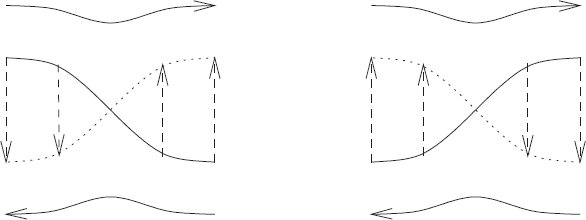
<figcaption id="Fig_4-15"><strong>Figure 4.15</strong> The fixed point on the left is linearly unstable. The one on the right is linearly stable.</figcaption>
</figure>

<p>We can deduce the stability of these fixed points of <epub:switch id="mathmlSwitch1061"><epub:case required-namespace="http://www.w3.org/1998/Math/MathML"><math xmlns="http://www.w3.org/1998/Math/MathML"><mrow><msubsup><mi>T</mi><mi mathvariant="italic">&#x03F5;</mi><mi>k</mi></msubsup></mrow></math></epub:case></epub:switch> just from the construction. The fixed points come in two types, elliptic and hyperbolic. An elliptic (stable) fixed point appears where the steps from <em>C</em><sub>0</sub> to <em>C</em><sub>1</sub> join with the flow of the background twist map to encircle the fixed point. A hyperbolic (unstable) fixed point appears where the steps from <em>C</em><sub>0</sub> to <em>C</em><sub>1</sub> join with the flow of the background twist map to move away from the fixed point. So just from the way the arrows connect we can determine the character of the fixed point. See <a href="chapter004.html#Fig_4-15">figure 4.15</a>.</p>

<p>As we develop a Poincar&#x00E9; section, we find that some orbits leave traces that circulate around the stable fixed points, resulting in the <a id="p321"></a>Poincar&#x00E9;&#x2013;Birkhoff islands. If we look at a particular island we see that orbits in the island circulate around the fixed point at a rate that is monotonically dependent upon the distance from the fixed point. In the vicinity of the fixed point the evolution is governed by a twist map. So the entire Poincar&#x00E9;&#x2013;Birkhoff construction can be carried out again. We expect that there will be concentric families of stable periodic points surrounded by islands and separated by separatrices emanating from unstable periodic points. Around each of these stable periodic orbits, the construction is repeated. So the Poincar&#x00E9;&#x2013;Birkhoff construction is recursive, leading to the development of an infinite hierarchy of structure.</p>
<section>
<section title="Computing the Poincar&#x00E9;&#x2013;Birkhoff Construction">
<h3 class="level3" id="h3_4-5-1"><a href="toc.html#Rh3_4-5-1"><strong>4.5.1 Computing the Poincar&#x00E9;&#x2013;Birkhoff Construction</strong></a></h3>

<p class="noindent">There are so many conditions in our construction of the fixed points that one might be suspicious. We can make the construction more convincing by actually computing the various pieces for a specific problem. Consider the periodically driven rotor, with Hamiltonian (<a href="chapter004.html#disp_4.41">4.41</a>). We set <em>m</em> &#x003D; 1 kg, <em>l</em> &#x003D; 1 m, <em>A</em> &#x003D; 0.1 m, <epub:switch id="mathmlSwitch1062"><epub:case required-namespace="http://www.w3.org/1998/Math/MathML"><math xmlns="http://www.w3.org/1998/Math/MathML"><mrow><mi>&#x03C9;</mi><mo>=</mo><mn>4.2</mn><msqrt><mrow><mn>9.8</mn></mrow></msqrt><mtext>&#x2009;</mtext><mtext>rad</mtext><mtext>&#x2009;</mtext><msup><mtext>s</mtext><mrow><mo>&#x2212;</mo><mn>1</mn></mrow></msup></mrow></math></epub:case></epub:switch>.</p>

<p>We call points that map to the same angle &#x201C;radially mapping points.&#x201D; We find them with a simple bisection search:</p>
<div class="pull-quote">

<p class="pq-noindent"><span class="font1">(define (radially-mapping-points Tmap Jmin Jmax phi eps)</span></p>

<p class="pqp1"><span class="font1">(bisect</span></p>

<p class="pqp2"><span class="font1">(lambda (J)</span></p>

<p class="pqp3"><span class="font1">((principal-value pi)</span></p>

<p class="pqp4"><span class="font1">(Tmap phi J</span></p>

<p class="pqp7"><span class="font1">(lambda (phip Jp) (- phi phip))</span></p>

<p class="pqp7"><span class="font1">(lambda () (error &#x201C;should not get here&#x201D;)))))</span></p>

<p class="pqp2"><span class="font1">Jmin Jmax eps))</span></p>
</div>

<p class="noindent">The procedure <span class="font1">Tmap</span> implements some map, which may be an iterate of some more primitive map. We give the procedure an angle <span class="font1">phi</span> to study, a range of actions <span class="font1">Jmin</span> to <span class="font1">Jmax</span> to search, and a tolerance <span class="font1">eps</span> for the solution.</p>

<p>In <a href="chapter004.html#Fig_4-16">figure 4.16</a> we show the Poincar&#x00E9;&#x2013;Birkhoff construction of the fixed points for the driven rotor. These particular curves are constructed for the two 1:1 commensurabilities between the rotation and the drive. One set of fixed points is constructed for each sense of rotation. The corresponding section is in <a href="chapter004.html#Fig_4-17">figure 4.17</a>. We see that the section shows the existence of fixed points exactly where the Poincar&#x00E9;&#x2013;Birkhoff construction shows the crossing of the curves <em>C</em><sub>0</sub> and <em>C</em><sub>1</sub>. Indeed, the nature of the fixed point is <a id="p322"></a>clearly reflected in the relative configuration of the <em>C</em><sub>0</sub> and <em>C</em><sub>1</sub> curves.</p>

<p>In <a href="chapter004.html#Fig_4-18">figure 4.18</a> we show the result for a rotation number of 1/3. The curves are the radially mapping points for the third iterate of the section map (solid) and the images of these points (dotted). These curves are distorted by their proximity to the 1:1 islands shown in <a href="chapter004.html#Fig_4-17">figure 4.17</a>. The corresponding section is shown in <a href="chapter004.html#Fig_4-19">figure 4.19</a>.</p>

<p class="noindent1-top-exe" id="Exe_4-7"><strong>Exercise  4.7: Computing the Poincar&#x00E9;&#x2013;Birkhoff construction</strong></p>

<p class="noindent">Consider <a href="chapter003.html#Fig_3-27">figure 3.27</a>. Find the fixed points for the three major island chains, using the Poincar&#x00E9;&#x2013;Birkhoff construction.</p>
</section>
</section>
</section>
<section title="Invariant Curves">
<h1 class="level1" id="h1-26b"><a href="toc.html#Rh1-26b"><strong>4.6&#160;&#160;&#160;Invariant Curves</strong></a></h1>

<p class="noindent">We started with an integrable system, where there are invariant curves. Do any invariant curves survive if a perturbation is added?</p>

<p>The Poincar&#x00E9;&#x2013;Birkhoff construction for twist maps shows that invariant curves with rational rotation number typically do not survive perturbation. Upon perturbation the invariant curves with rational rotation numbers are replaced by an alternating sequence of stable and unstable periodic orbits. So if there are invariant curves that survive perturbation they must have irrational rotation numbers.</p>

<p>The perturbed system has chains of alternating stable and unstable fixed points for every rational rotation number. Each stable fixed point is surrounded by an island that occupies some region of the section. Each irrational is arbitrarily close to a rational, so it is not obvious that any invariant curve can survive an arbitrarily small perturbation.</p>

<p>Nevertheless, the Kolmogorov&#x2013;Arnold&#x2013;Moser (KAM) theorem proves that invariant curves do exist if the perturbation is small enough that the perturbed problem is &#x201C;close enough&#x201D; to an integrable problem, and if the rotation number is &#x201C;irrational enough.&#x201D; We will not prove this theorem here. Instead we will develop methods for finding particular invariant curves.</p>

<p>Stable periodic orbits have a stable island surrounding them on the surface of section. The largest islands are associated with rationals with small denominators. In general, the size of the island is limited to a size that decreases as the denominator increases. These islands are a local indication of the effect of the perturbation. Similarly, the chaotic zones appear near unstable periodic orbits and their homoclinic tangles. The homoclinic tangle is a continuous curve so it cannot cross an invariant curve, which is also continuous. If we are looking for invariant curves that persist upon perturbation, we would be wise to avoid regions of phase space where the islands or homoclinic tangles are major features.</p>
<a id="p323"></a>
<figure>
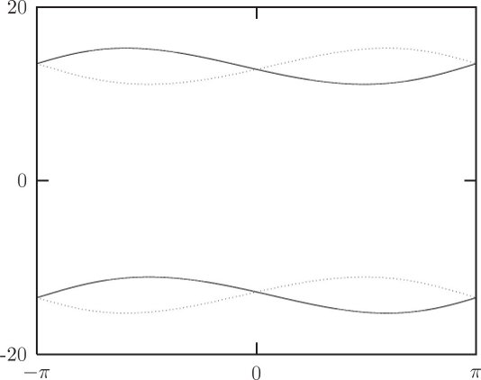
<figcaption id="Fig_4-16"><strong>Figure 4.16</strong> The curves <em>C</em><sub>0</sub> (solid) and <em>C</em><sub>1</sub> (dotted) for the 1:1 commensurability.</figcaption>
</figure>
<figure>
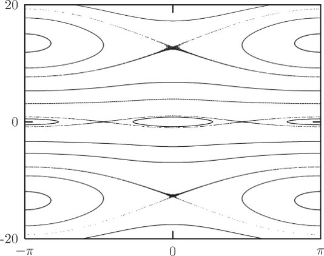
<figcaption id="Fig_4-17"><strong>Figure 4.17</strong> A surface of section displaying the 1:1 commensurability.</figcaption>
</figure>
<a id="p324"></a>
<figure>
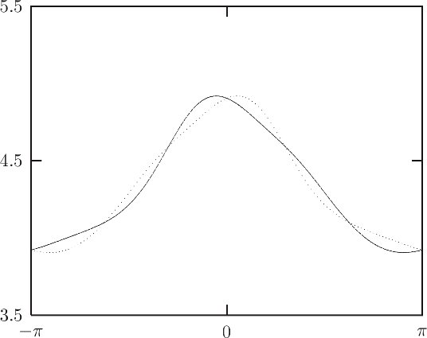
<figcaption id="Fig_4-18"><strong>Figure 4.18</strong> The curves <em>C</em><sub>0</sub> (solid) and <em>C</em><sub>1</sub> (dotted) for the 1:3 commensurability. The angle runs from &#x2212;<em>&#x03C0;</em> to <em>&#x03C0;</em>. The momentum runs from 3.5 to 4.5 in appropriate units.</figcaption>
</figure>
<figure>
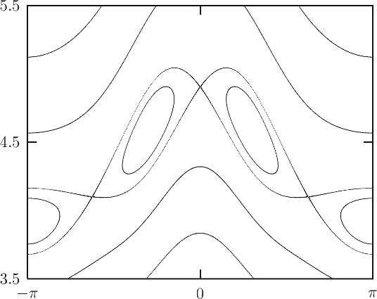
<figcaption id="Fig_4-19"><strong>Figure 4.19</strong> A surface of section displaying the 1:3 commensurability. The angle runs from &#x2212;<em>&#x03C0;</em> to <em>&#x03C0;</em>. The momentum runs from 3.5 to 4.5 in appropriate units.</figcaption>
</figure>
<a id="p325"></a>

<p>The Poincar&#x00E9;&#x2013;Birkhoff islands are ordered by rotation number. Because of the twist condition, the rotation number is monotonic in the momentum of the unperturbed problem. If there is an invariant curve with a given rotation number, it is sandwiched between island chains associated with rational rotation numbers. The rotation number of the invariant curve must be between the rotation numbers of the island chains on either side of it.</p>

<p>The fact that the size of the islands decreases with the size of the denominator suggests that invariant curves with rotation numbers for which nearby rationals require large denominators are the most likely to exist. So we will begin our search for invariant curves by examining rotation numbers that are not near rationals with small denominators.</p>

<p>Any irrational can be approximated by a sequence of rationals, and for each of these rationals we expect there to be stable and unstable periodic orbits with stable islands and homoclinic tangles. An invariant curve for a given rotation number has the best chance of surviving if the size of the islands associated with each rational approximation to the rotation number is smaller than the separation of the islands from that invariant curve.</p>

<p>For any particular size denominator, the best rational approximation to an irrational number is given by an initial segment of a simple continued fraction. If the approximating continued fraction converges slowly to the irrational number, then that number is not near rationals with small denominators. Thus, we will look for invariant curves with rotation numbers that have slowly converging continued-fraction approximations. The continued fractions that converge most slowly have tails that are all one. Such a number is called a <em>golden number</em>. For example, the golden ratio,</p>

<p class="eqtext" id="disp_4.43"><epub:switch id="mathmlSwitch1063"><epub:case required-namespace="http://www.w3.org/1998/Math/MathML"><math display='block' xmlns="http://www.w3.org/1998/Math/MathML"><mrow><mtable><mtr><mtd><mrow><mi>&#x03D5;</mi><mo>=</mo><mfrac><mrow><mn>1</mn><mo>+</mo><msqrt><mn>5</mn></msqrt></mrow><mn>2</mn></mfrac><mo>=</mo><mn>1</mn><mo>+</mo><mfrac><mn>1</mn><mrow><mn>1</mn><mo>+</mo><mfrac><mn>1</mn><mrow><mn>1</mn><mo>+</mo><mfrac><mn>1</mn><mrow><mn>1</mn><mo>+</mo><mo>&#x22EF;</mo></mrow></mfrac></mrow></mfrac></mrow></mfrac><mo>,</mo></mrow></mtd><mtd><mrow><mo stretchy='false'>(</mo><mn>4.43</mn><mo stretchy='false'>)</mo></mrow></mtd></mtr></mtable></mrow></math></epub:case></epub:switch></p>

<p class="noindent">is just such a number.</p>
<a id="p326"></a>
<section>
<section title="Finding Invariant Curves">
<h3 class="level3" id="h3_4-6-1"><a href="toc.html#Rh3_4-6-1"><strong>4.6.1 Finding Invariant Curves</strong></a></h3>

<p class="noindent">Invariant curves, if there are any, are characterized by a particular rotation number. Points on the invariant curve map to points on the invariant curve. Neighboring points map to neighboring points, preserving the order.</p>

<p>On the section for the unperturbed integrable system, the angle between successive section points is constant: &#x0394;<em>&#x03B8;</em> &#x003D; 2<em>&#x03C0;&#x03BD;</em>(<em>J</em>) for rotation number <em>&#x03BD;</em>(<em>J</em>). This map of the circle onto itself with constant angular step we call a <em>uniform circle map</em>.</p>

<p>For a given rotation number, points on the section are laid down in a particular order characteristic of the rotation number only. As a perturbation is turned on, the invariant curve with a particular rotation number will be distorted and the angle between successive points will no longer be constant. All that is required to have a particular rotation number is that the average change in angle be &#x0394;<em>&#x03B8;</em>. Nevertheless, the ordering of the points on the surface of section is preserved, and is characteristic of the rotation number.</p>

<p>The fact that the sequence of points on the surface of section for an invariant curve with a given rotation number must have a particular order can be used to find the invariant curve. At a specified angle we perform a bisection search for the momentum that lies on the invariant curve. We can tell whether the initial point is on the desired invariant curve or which side of the invariant curve it is on by evolving a candidate initial point with both the perturbed map and the uniform circle map and comparing the ordering of the sequences of points that are generated.</p>

<p>A program to implement this plan of attack is<sup><a class="footnote_link" href="#endnote_15" id="endnote_ref_15">15</a></sup></p>
<div class="pull-quote">

<p class="pq-noindent"><span class="font1">(define (find-invariant-curve the-map rn theta0 Jmin Jmax eps)</span></p>

<p class="pqp1"><span class="font1">(bisect (lambda (J) (which-way? rn theta0 J the-map))</span></p>

<p class="pqp6"><span class="font1">Jmin Jmax eps))</span></p>
</div>

<p>Since ordering inconsistencies are found near the initial angle we do not need to keep the whole list of angles. Instead, we can keep track of a small list of angles near the initial angle. In fact, keeping <a id="p327"></a>track of the nearest angle on either side of the initial angle works well.</p>

<p>The procedure <span class="font1">which-way?</span> is implemented as a simple loop with state variables for the two orbits and the endpoints of the intervals. The <span class="font1">z</span> variables keep track of the angle of the uniform circle map; the <span class="font1">x</span> variables keep track of the angle of the map under study. The <span class="font1">y</span> variable is the momentum for the map under study. On each iteration we determine if the angle of the uniform circle map is in the interval of interest below or above the initial angle. If it is in neither interval then the map is further iterated. However, if it is in the region of interest then we check to see if the angle of the other map is in the corresponding interval. If so, the intervals for the uniform circle map and the other map are narrowed and the iteration proceeds. If the angle is not in the required interval, a discrepancy is noted and the sign of the discrepancy is reported. For this process to make sense the differences between the angles for successive iterations of both maps must be less than <em>&#x03C0;</em>.</p>
<div class="pull-quote">

<p class="pq-noindent"><span class="font1">(define (which-way? rotation-number x0 y0 the-map)</span></p>

<p class="pqp1"><span class="font1">(let ((pv (principal-value ( x0 pi))))</span></p>

<p class="pqp2"><span class="font1">(let lp ((z x0) (zmin (- x0 :2pi)) (zmax (&#x002B; x0 :2pi))</span></p>

<p class="pqp7"><span class="font1">(x x0) (xmin (- x0 :2pi)) (xmax (&#x002B; x0 :2pi))</span></p>

<p class="pqp7"><span class="font1">(y y0))</span></p>

<p class="pqp3"><span class="font1">(let ((nz (pv (&#x002B; z (<sub>&#x002A;</sub> :2pi rotation-number)))))</span></p>

<p class="pqp4"><span class="font1">(the-map x y</span></p>

<p class="pqp5"><span class="font1">(lambda (nx ny)</span></p>

<p class="pqp6"><span class="font1">(let ((nx (pv nx)))</span></p>

<p class="pqp7"><span class="font1">(cond ((&#x003C; x0 z zmax)</span></p>

<p class="pqp8"><span class="font1">(if (&#x003C; x0 x xmax)</span></p>

<p class="pqp9"><span class="font1">(lp nz zmin z nx xmin x ny)</span></p>

<p class="pqp9"><span class="font1">(if (&#x003E; x xmax) 1 -1)))</span></p>

<p class="pqp8"><span class="font1">((&#x003C; zmin z x0)</span></p>

<p class="pqp8"><span class="font1">(if (&#x003C; xmin x x0)</span></p>

<p class="pqp9"><span class="font1">(lp nz z zmax nx x xmax ny)</span></p>

<p class="pqp9"><span class="font1">(if (&#x003C; x xmin) -1 1)))</span></p>

<p class="pqp8"><span class="font1">(else</span></p>

<p class="pqp8"><span class="font1">(lp nz zmin zmax nx xmin xmax ny)))))</span></p>

<p class="pqp5"><span class="font1">(lambda ()</span></p>

<p class="pqp6"><span class="font1">(error &#x201C;Map failed&#x201D; x y)))))))</span></p>
</div>

<p class="noindent">With this method of comparing rotation numbers we can find the initial momentum (for a given initial angle) for an invariant curve with a given rotation number to high precision.</p>
<a id="p328"></a>
<figure>
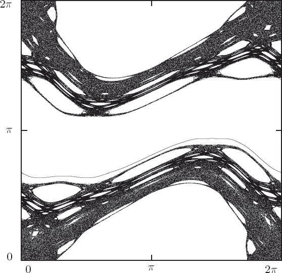
<figcaption id="Fig_4-20"><strong>Figure 4.20</strong> A surface of section displaying the invariant curve at rotation number 1 &#x2212; 1/<em>&#x03D5;</em> for the standard map with <em>K</em> &#x003D; .95. The invariant curve is in context: there is a chaotic region that almost eats the curve. The angle and momentum run from 0 to 2<em>&#x03C0;</em>.</figcaption>
</figure>

<p>We search the standard map for an invariant curve with a golden rotation number:<sup><a class="footnote_link" href="#endnote_16" id="endnote_ref_16">16</a></sup></p>
<table class="table1n">
<tr>
<td class="td1" valign="top"><span class="font1">(find-invariant-curve</span></td>
<td class="td1" valign="top"><span class="font1">(standard-map 0.95)</span></td>
</tr>
<tr>
<td class="td1" valign="top"></td>
<td class="td1" valign="top"><span class="font1">(- 1 (/ 1 golden-ratio))</span></td>
</tr>
<tr>
<td class="td1" valign="top"></td>
<td class="td1" valign="top"><span class="font1">0.0</span></td>
</tr>
<tr>
<td class="td1" valign="top"></td>
<td class="td1" valign="top"><span class="font1">2.0</span></td>
</tr>
<tr>
<td class="td1" valign="top"></td>
<td class="td1" valign="top"><span class="font1">2.2</span></td>
</tr>
<tr>
<td class="td1" valign="top"></td>
<td class="td1" valign="top"><span class="font1">1e-16)</span></td>
</tr>
</table>

<p class="pq-noindent"><span class="font1">;Value: 2.1144605494391726</span></p>

<p class="noindent1-top">Using initial conditions computed in this way, we can produce the invariant curve (see <a href="chapter004.html#Fig_4-20">figure 4.20</a>). If we expand the putative <a id="p329"></a>invariant curve it should remain a curve for all magnifications&#x2014;it should show no sign of chaotic fuzziness (see <a href="chapter004.html#Fig_4-21">figure 4.21</a>).</p>
<figure>
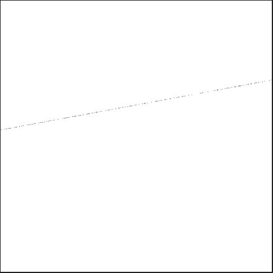
<figcaption id="Fig_4-21"><strong>Figure 4.21</strong> Here is a small portion of the invariant curve shown in <a href="chapter004.html#Fig_4-20">figure 4.20</a>, magnified by 2<em>&#x03C0;</em> &#x00D7; 10<sup>7</sup>. We see that even at this magnification the points appear to lie on a line. We also see that the visitation frequency of points is highly nonuniform.</figcaption>
</figure>

<p class="noindent1-top-exe" id="Exe_4-8"><strong>Exercise  4.8: Invariant curves in the standard map</strong></p>

<p class="noindent">Find an invariant curve of the standard map with a different golden rotation number. Expand it to show that it retains the features of a curve at high magnification.</p>
</section>
<section title="Dissolution of Invariant Curves">
<h3 class="level3" id="h3_4-6-2"><a href="toc.html#Rh3_4-6-2"><strong>4.6.2 Dissolution of Invariant Curves</strong></a></h3>

<p class="noindent">As can be seen in <a href="chapter004.html#Fig_4-21">figure 4.21</a>, the points on an invariant curve are not uniformly visited, unlike the picture we would get plotting the angles for the uniform circle map. This is because an interval may be expanded or compressed when mapped. We can compute the relative probability density for visitation of each angle on the invariant curve. A crude way to obtain this result is to count the number of points that fall into equal incremental angle bins. It is more effective to use the linear variational map constructed from the map being investigated to compute the change in incremental <a id="p330"></a>angle from one point to its successor. Since all of the points in a small interval around the source point are mapped to points (in the same order) in a small interval around the target point, the relative probability density at a point is inversely proportional to the size of the incremental interval around that point. In order to get this started we need a good estimate of the initial slope for the invariant curve. We can estimate the slope by a difference quotient of the momentum and angle increments for the interval that we used to refine the momentum of the invariant curve with a given rotation number.</p>

<p><a href="#Fig_4-22">Figures 4.22</a> and <a href="#Fig_4-23">4.23</a> show the relative probability density of visitation as a function of angle for the invariant curve of golden rotation number in the standard map for three different values of the parameter <em>K</em>. As <em>K</em> increases, certain angles become less likely. Near <em>K</em> &#x003D; 0.971635406 some angles are never visited. But the invariant curve must be continuous. Thus it appears that for larger <em>K</em> the invariant curve with this rotation number will not exist. Indeed, if the invariant set persists with the given rotation number it will have an infinite number of holes (because it has an irrational rotation number). Such a set is sometimes called a <em>cantorus</em> (plural <em>cantori</em>).</p>
</section>
</section>
</section>
<section title="Summary">
<h1 class="level1" id="h1-27"><a href="toc.html#Rh1-27"><strong>4.7&#160;&#160;&#160;Summary</strong></a></h1>

<p class="noindent">Surfaces of section of a typical Hamiltonian system exhibit a menagerie of features including fixed points, invariant curves, resonance islands, and chaotic zones. Integrable systems have much simpler surfaces of section. By adding small effects to integrable systems we get insight into how this complicated behavior emerges.</p>

<p>Surfaces of section for integrable systems display only certain characteristic orbit types. There are fixed points, which correspond to equilibria or periodic orbits. A fixed point may be stable or unstable, depending on the stability of the corresponding equilibrium or orbit. There are sets of points on the section that are asymptotic forward and backward in time to the unstable fixed point. And there are sets of trajectories that fall on invariant curves. If the rotation number of the invariant curve is irrational, each of these trajectories densely covers the invariant curve; if the rotation number is rational, then each trajectory visits only a finite number of points on the invariant curve.</p>
<a id="p331"></a>
<figure>
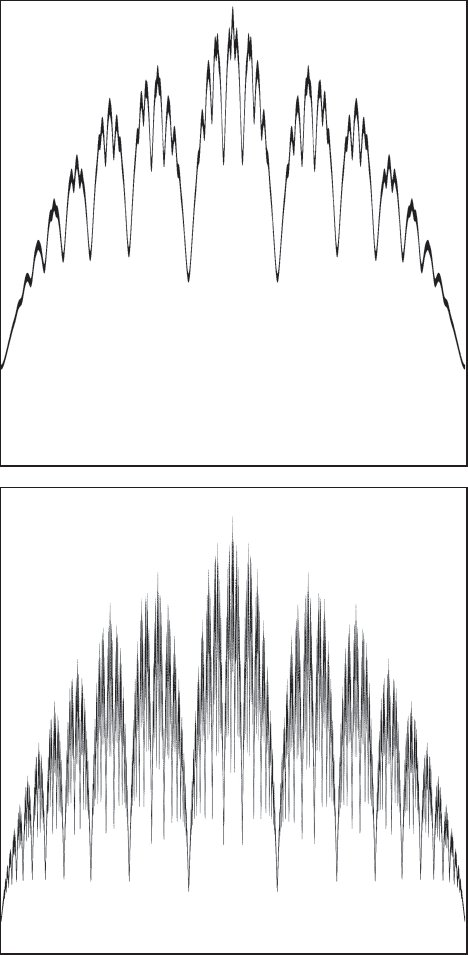
<figcaption id="Fig_4-22"><strong>Figure 4.22</strong> The relative probability density of visitation as a function of angle for the invariant curve of golden rotation number in the standard map with <em>K</em> &#x003D; 0.95 (above) and <em>K</em> &#x003D; 0.97 (below). As <em>K</em> increases, the function becomes more complex and certain angles become less likely to be visited.</figcaption>
</figure>
<a id="p332"></a>
<figure>
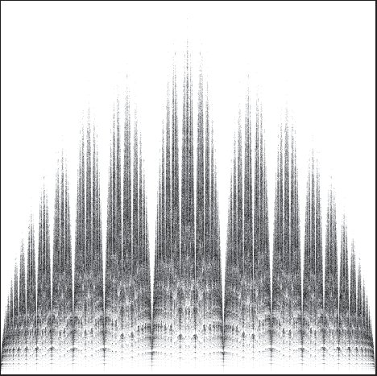
<figcaption id="Fig_4-23"><strong>Figure 4.23</strong> The relative probability density of visitation as a function of angle for the invariant curve of golden rotation number in the standard map with <em>K</em> &#x003D; 0.971635406. Here the function is very complex and appears self-similar. The valleys appear to reach to zero, so there are discrete angles that are never visited.</figcaption>
</figure>

<p>Linear stability analysis addresses the nature of the motion near the fixed points on the section. These points correspond to either equilibrium points or periodic orbits. There are characteristic frequencies of the motion, each with an associated characteristic direction. For Hamiltonian systems only certain patterns of characteristic frequencies are possible. On two-dimensional area-preserving surfaces of section, as generated by Hamiltonian systems, fixed points are linearly stable (elliptic fixed points) or linearly unstable (hyperbolic fixed points).</p>

<p>With the addition of small effects, the surface of section changes in certain typical ways. One characteristic change occurs near the unstable fixed points. The stable and unstable manifolds, those curves consisting of the sets of points that are asymptotic to the unstable fixed points forward and backward in time, no longer join smoothly, but instead cross. A first crossing implies that there are an infinite number of other crossings, and the stable and unstable manifolds develop an extremely complicated tangle.</p>
<a id="p333"></a>

<p>The Poincar&#x00E9;&#x2013;Birkhoff construction shows how the infinite number of periodic orbits on an invariant curve with rational rotation number that is characteristic of an integrable system degenerates into a finite number of alternating stable and unstable fixed points when the system becomes nonintegrable. This phenomenon is recursive, so we find that it develops an infinite hierarchy of structure: The region around every stable fixed point is itself filled with commensurabilities with alternating stable and unstable fixed points.</p>

<p>Some invariant curves survive the addition of small effects to an integrable system. The Kolmogorov&#x2013;Arnold&#x2013;Moser theorem proves that some invariant curves persist upon perturbation. We can find invariant curves of particular rotation numbers by comparing the pattern of points generated for a candidate initial point on the invariant curve to the expected pattern of points for the invariant curve being sought. As the additional effect is made stronger, the invariant curves that survive longest are those with the most irrational rotation number. At the point of breakup, the probability of visitation of various points on the invariant curve develops a self-similar appearance. For larger perturbations, the invariant curve disappears, leaving an invariant set with an infinite number of holes.</p>
</section>
<section title="Projects">
<h1 class="level1" id="h1-28"><a href="toc.html#Rh1-28"><strong>4.8&#160;&#160;&#160;Projects</strong></a></h1>

<p class="noindent1-top-exe" id="Exe_4-9"><strong>Exercise  4.9: Secondary islands</strong></p>

<p class="noindent">In <a href="chapter004.html#Fig_4-3">figure 4.3</a> (<a href="chapter004.html#h1-24a">section 4.1</a>) we see a chain of six secondary islands in the oscillation region. Carry out the Poincar&#x00E9;&#x2013;Birkhoff construction to obtain the alternating sequence of stable and unstable fixed points for this island chain.</p>

<p class="noindent1-top-exe" id="Exe_4-10"><strong>Exercise  4.10: Invariant curves of the standard map</strong></p>

<p class="noindent1-topa"><strong>a.</strong> Make programs that reproduce <a href="#Fig_4-22">figures 4.22</a> and <a href="#Fig_4-23">4.23</a>. You will need to develop an effective method of estimating the probability of visitation. There is one suggestion of how to do that in the text, but you may find a better way.</p>

<p class="noindent1-topa"><strong>b.</strong> As the parameter <em>K</em> is increased beyond the critical value, the golden invariant curve ceases to exist. Investigate how the method for finding invariant curves fails beyond the critical value of <em>K</em>.</p>

<p class="ntx" id="endnote_1"><a epub:type="noteref" href="#endnote_ref_1"><sup>1</sup></a>Keep in mind that the abscissa is an angle.</p>

<p class="ntx" id="endnote_2"><a epub:type="noteref" href="#endnote_ref_2"><sup>2</sup></a>Actually, all we need is &#x2202;<sub>0</sub>&#x2202;<sub>1</sub><em>F</em> (<em>t</em>, <em>z<sub>e</sub></em>) &#x003D; 0.</p>

<p class="ntx" id="endnote_3"><a epub:type="noteref" href="#endnote_ref_3"><sup>3</sup></a>If the eigenvalues are not distinct then the form of the solution is modified.</p>

<p class="ntx" id="endnote_4"><a epub:type="noteref" href="#endnote_ref_4"><sup>4</sup></a>The map <em>T</em> is being used as an operator: multiplication is interpreted as composition.</p>

<p class="ntx" id="endnote_5"><a epub:type="noteref" href="#endnote_ref_5"><sup>5</sup></a>A characteristic multiplier is also sometimes called a Floquet multiplier.</p>

<p class="ntx" id="endnote_6"><a epub:type="noteref" href="#endnote_ref_6"><sup>6</sup></a>We assume for now that the eigenvalues are distinct.</p>

<p class="ntx" id="endnote_7"><a epub:type="noteref" href="#endnote_ref_7"><sup>7</sup></a>Sometimes it is argued that the stable and unstable manifolds cannot cross themselves on the basis of the uniqueness of solutions of differential equations. This argument is incorrect. The stable and unstable manifolds are not themselves solutions of a differential equation, they are sets of points whose solutions are asymptotic to the unstable fixed points.</p>

<p class="ntx" id="endnote_8"><a epub:type="noteref" href="#endnote_ref_8"><sup>8</sup></a>The procedure <span class="font1">iterated-map</span> takes a map and an integer <span class="font1">n</span>. It returns a new map that is the result of iterating the given map <span class="font1">n</span> times.</p>

<p class="ntx" id="endnote_9"><a epub:type="noteref" href="#endnote_ref_9"><sup>9</sup></a>A commensurability occurs when the frequencies involved are not linearly independent over the integers. We will define this carefully on <a href="chapter004.html#p312">page 312</a>.</p>

<p class="ntx" id="endnote_10"><a epub:type="noteref" href="#endnote_ref_10"><sup>10</sup></a>Motion with <em>n</em> incommensurate frequencies is dense on the <em>n</em>-torus. Furthermore, such motion is <em>ergodic</em> on the <em>n</em>-torus. This means that time averages of time-independent phase-space functions computed along trajectories are equal to the phase-space average of the same function over the torus.</p>

<p class="ntx" id="endnote_11"><a epub:type="noteref" href="#endnote_ref_11"><sup>11</sup></a>For time-independent systems with two degrees of freedom the boundary between regions described by different action-angle coordinates has asymptotic solutions and unstable periodic orbits or equilibrium points. The solutions on the boundary are not described by the action-angle Hamiltonian.</p>

<p class="ntx" id="endnote_12"><a epub:type="noteref" href="#endnote_ref_12"><sup>12</sup></a>The coordinate <epub:switch id="mathmlSwitch1064"><epub:case required-namespace="http://www.w3.org/1998/Math/MathML"><math xmlns="http://www.w3.org/1998/Math/MathML"><mrow><mover accent='true'><mi>&#x03B8;</mi><mo stretchy="false">&#x02C6;</mo></mover><mrow><mo>(</mo><mi>i</mi><mo>)</mo></mrow></mrow></math></epub:case></epub:switch> is an angle. It can be brought to a standard interval such as 0 to 2<em>&#x03C0;</em>.</p>

<p class="ntx" id="endnote_13"><a epub:type="noteref" href="#endnote_ref_13"><sup>13</sup></a>For a map to be a twist map we require that there is a positive number <em>K</em> such that &#x007C;<em>D&#x03BD;</em>(<em>J</em>)&#x007C; &#x003E; <em>K</em> &#x003E; 0 over some interval of <em>J</em>.</p>

<p class="ntx" id="endnote_14"><a epub:type="noteref" href="#endnote_ref_14"><sup>14</sup></a>The section points for any particular orbit are countable and dense, but they have zero measure on the line.</p>

<p class="ntx" id="endnote_15"><a epub:type="noteref" href="#endnote_ref_15"><sup>15</sup></a>This method depends on the assumptions that <span class="font1">Jmin</span> and <span class="font1">Jmax</span> bracket the actual momentum, and that the rotation number is sufficiently continuous in momentum in that region.</p>

<p class="ntx" id="endnote_16"><a epub:type="noteref" href="#endnote_ref_16"><sup>16</sup></a>There is no invariant curve in the standard map that has rotation number <em>&#x03D5;</em> &#x003D; 1.618&#x2026;. However, 1 &#x2212; 1/<em>&#x03D5;</em> has the same continued-fraction tail as <em>&#x03D5;</em> and this rotation number appears in the standard map.</p>
<a id="p334"></a>
</section>
